← Index · ← Previous · Next →
Authors: Luke K. Davis
Type: theory · Category: statistical mechanics · PDF: https://arxiv.org/pdf/2606.16483v1
Analysis basis: full PDF text, analyzed in chunks
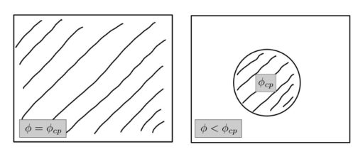
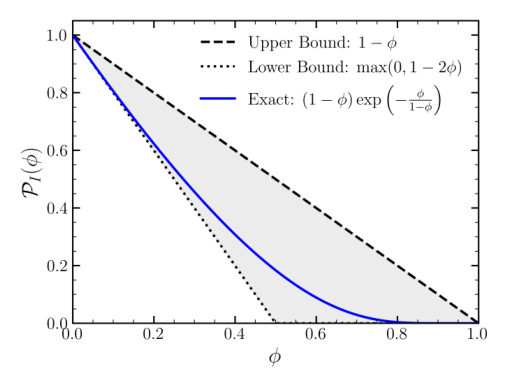
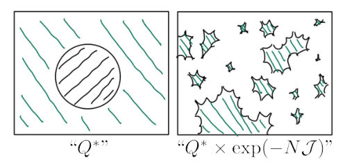
Summary. This work introduces a novel geometric decomposition for calculating the hard-sphere partition function in $d$ dimensions. It factors the total partition function into an upper bound derived from close-packing geometry and an exponential penalty term related to void space fragmentation. This provides a powerful, geometrically controlled framework for understanding fluid thermodynamics across all densities.
Why it may be interesting. While focused on classical statistical mechanics, the rigorous geometric bounding techniques used to control fluctuations in the void space are highly relevant for developing controlled approximations in quantum many-body systems where local correlations dominate.
Main problem. To derive a rigorous geometric decomposition for the $d$-dimensional hard-sphere partition function, $Q(N, V, T)$.
Main result. The partition function is shown to factorize into a reference upper bound ($Q^*$) and an exponential penalty term: $Q \propto Q^* \exp(-NJ)$, where $J$ depends on the boundary-to-volume ratio of voids.
Method. The authors use geometric bounds, inspired by close-packing arguments and formalized via local density certificates (Blichfeldt-type), to establish an upper bound on the configurational integral.
Model / system. The system is a classical hard-sphere fluid in $d$ dimensions. The analysis focuses on calculating the partition function based on the available insertion volume ($V_I$) for adding particles without overlap.
Key observables. Hard-sphere partition function ($Q$), Insertion Probability ($\Pi_I$), Packing Fraction ($\phi$), and Compressibility Factor ($Z$).
Important parameters / regimes. Dimensionality ($d$), Close-packing density ($\phi_{cp}$), and the ratio of surface area to volume of excluded regions.
Assumptions / limitations. The rigorous derivation relies on the existence of a local density certificate that allows bounding the exclusion set volume, particularly at high densities.
Figures summary. Figures compare various bounds on the insertion probability ($\Pi_I$) against known exact solutions for low dimensions ($d=1$), and illustrate the decomposition of $Q$ into a reference bound ($Q^*$) and a geometric penalty factor.
Paper structure. The paper systematically develops the factorization, first establishing upper bounds using geometry (Chunk 1), then deriving the finite-$N$ exact relationship involving insertion volume ratios (Chunk 2), and finally confirming thermodynamic consistency across low-density (van der Waals) and high-density (close-packed limit) regimes (Chunks 3 & 4).
We introduce a geometric decomposition of the hard-sphere partition function. Using a close-packing-inspired geometric bound on the available insertion volume, made rigorous when a corresponding local density certificate is available, we establish a reference upper bound $Q^\ast$ on the configurational integral. Factoring this upper bound out of the statistical geometric partition function of Speedy yields a new form for the $d$-dimensional partition function, $Q(N,V,T)=Q^\ast \exp(-N \mathcal{J})$, where $\mathcal{J}$ depends strictly on the boundary-to-volume ratio of the voids and the close-packing density. Overall, this work deepens our statistical geometric understanding of the hard-sphere system.
Authors: C. A. S. Almeida, J. Auto-Neto
Type: theory · Category: other · PDF: https://arxiv.org/pdf/2606.15995v1
Analysis basis: full PDF text, analyzed in chunks
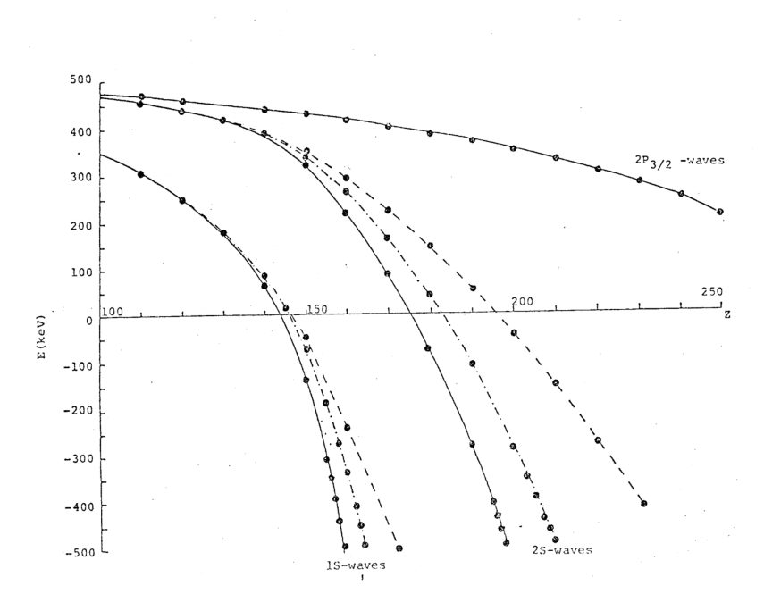
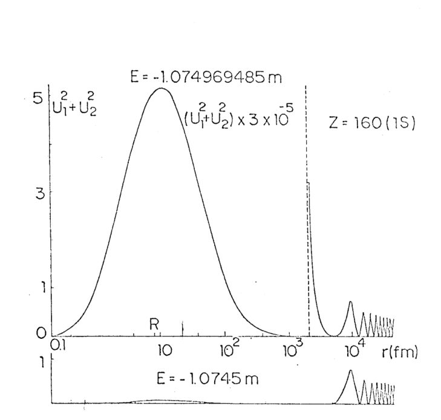
Summary. This paper investigates the behavior of electron energy levels in super-heavy atoms ($Z>100$) where standard quantum electrodynamics predicts unphysical singularities. By incorporating the electron's Anomalous Magnetic Dipole Moment (AMDM) into the theoretical framework, the authors demonstrate that this contribution regularizes the wave functions and yields physically acceptable results for high Z numbers.
Why it may be interesting. This work directly tackles fundamental theoretical limitations in QED applied to extreme matter (super-heavy elements), providing an alternative regularization mechanism that has implications for understanding vacuum stability and atomic structure beyond current standard models.
Main problem. The study addresses the singularity issue encountered in standard Quantum Electrodynamics (QED) point-nucleus models when calculating electron energy levels for super-heavy atoms ($Z > 137$).
Main result. Incorporating the electron's Anomalous Magnetic Dipole Moment (AMDM) provides a sufficient condition to obtain regular wave functions and physically acceptable energy values even in the idealized point-nucleus limit for very high atomic numbers.
Method. The analysis involves modifying Dirac's equation with an effective Pauli Hamiltonian term representing the AMDM, leading to coupled differential equations solved using techniques like Whittaker functions and perturbation theory.
Model / system. The system is a single electron orbiting a super-heavy nucleus ($Z > 100$). The model uses a point-nucleus approximation but incorporates the AMDM contribution via an effective Hamiltonian modification to regularize the wave function at the origin.
Key observables. Energy eigenvalues $E(Z)$, critical atomic number $Z_{ ext{crit}}$ where $E=-m$, and the behavior of radial wave functions near the nucleus.
Important parameters / regimes. Fine structure constant ($\alpha$), AMDM parameter ($a = (g-2)/2$), and the atomic number $Z$.
Assumptions / limitations. The primary assumption is that including the AMDM contribution via an effective theory is sufficient to regularize the wave functions, even though finite nuclear size effects are usually required for full accuracy.
Figures summary. Figure 1 compares numerically obtained eigenvalues from the AMDM model against results from finite-nucleus models. Figure 2 illustrates the behavior of a specific function related to the wave function in the point nucleus + AMDM model.
Paper structure. The paper first introduces the problem of singularities in QED for super-heavy atoms. It then modifies the Hamiltonian using the AMDM, derives coupled differential equations, and solves them by analyzing near-origin behavior and transforming the problem into a Schrödinger-type equation to determine energy dependence on Z.
Super-heavy atoms ($Z > 100$) are usually studied in the context of the so-called ``Quantum Electrodynamics of Strong Fields''. In this theory the problem of the singularity in the electron energy whenever $Z > 137$ is overcome. This is done by considering the finite size of the nucleus and leads to interesting phenomena, such as the spontaneous production of positrons. Here, we show that taking into account the contribution from the Anomalous Magnetic Dipole Moment of the electron (by means of an effective theory), within a point-nucleus model, is a sufficient condition to obtain regular wave functions and physically acceptable energy values for $Z > 137$.
Authors: Aidan Wagner, Mingkuan Xu, Pengyu Liu, Zhihao Jia, Umut A. Acar
Type: theory · Category: quantum information and computing · PDF: https://arxiv.org/pdf/2606.16221v1
Analysis basis: full PDF text, analyzed in chunks
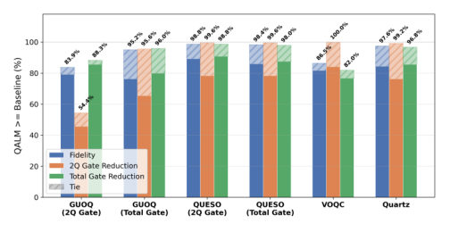
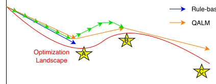
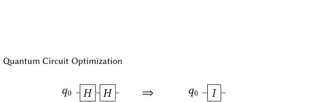
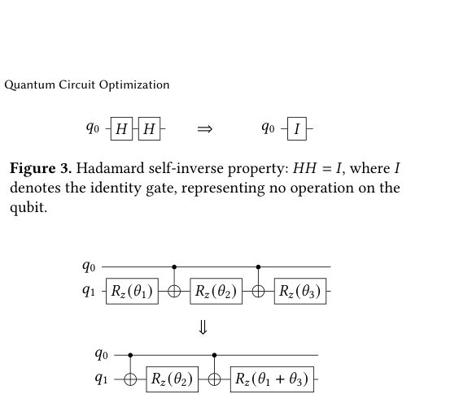
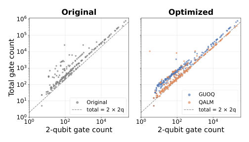
Summary. The paper introduces QALM, a novel hybrid optimizer designed to improve quantum circuit synthesis. It combines the speed of rule-based optimization with the thoroughness of search algorithms by interleaving these two approaches. This allows QALM to achieve superior gate reduction rates compared to existing methods without incurring prohibitive computational overhead.
Why it may be interesting. This work directly addresses algorithmic bottlenecks in quantum computation resource estimation, which is crucial for designing efficient circuits for near-term hardware devices.
Main problem. Quantum circuit optimization aims to find an equivalent quantum circuit with minimum cost (e.g., gate count) by overcoming the limitations of local minima encountered by existing optimizers.
Main result. The proposed QALM optimizer outperforms existing rule-based and search-based methods in circuit reduction rates while maintaining high computational efficiency across a comprehensive benchmark suite.
Method. QALM employs a hybrid framework that interleaves exhaustive, targeted search capabilities with efficient, greedy rule-based optimization passes.
Model / system. The system modeled is quantum circuits represented as Directed Acyclic Graphs (DAGs), where qubits are wires and gates are nodes. Optimization requires maintaining circuit equivalence while minimizing cost metrics like gate count or depth.
Key observables. Circuit fidelity ($F$), total gate count reduction, two-qubit gate ($ ext{CX}$) reduction percentage, and optimization runtime.
Important parameters / regimes. The exploration depth parameter $k$ controls the balance between search (exploration) and rule application (exploitation).
Assumptions / limitations. It is assumed that interleaving search and rules provides a superior trade-off compared to using either method in isolation, despite the problem's inherent computational hardness.
Figures summary. Figures compare optimization trajectories showing QALM's ability to escape local minima; other figures illustrate performance comparisons across various benchmarks (e.g., fidelity vs. gate reduction).
Paper structure. The paper introduces the fundamental limitations of greedy and pure search optimizers, proposes the interleaved QALM framework parameterized by an exploration depth $k$, details its iterative algorithm, and validates it against multiple state-of-the-art benchmarks.
Quantum circuit optimizers face a fundamental limitation in how they tolerate temporary cost increases. At one extreme, greedy rule-based optimizers immediately apply any cost-reducing transformation, achieving high efficiency but quickly becoming trapped in local minima. At the other extreme, search-based optimizers accept cost-increasing moves to explore the circuit space and escape such minima. However, because search-based optimizers cannot determine within a reasonable time budget whether a given point is promising, that is, whether its neighborhood contains a deeper local minimum, they must blindly explore higher-cost regions. As a result, escaping the current basin to reach a promising point takes exponentially many steps. In this work, we show that this limitation can be overcome with a hybrid framework that interleaves the exhaustive exploration capabilities of search algorithms with the efficiency of rule-based optimization. We implement this framework as QALM, a novel optimizer designed to escape local minima without incurring the runtime penalties of pure search. Crucially, our results demonstrate that QALM does not merely strike a balance; it outperforms existing rule-based and search-based optimizers in circuit reduction rates while operating with the computational efficiency of rule-based systems. In a comprehensive evaluation across 248 circuits, QALM matches or exceeds the fidelity of the strongest baseline on 83.9% of these circuits, given the same time budget.
Authors: Yuqi Jiang, Yuqi Zhang, Zhiding Liang, Qiang Guan, Yan Li, Ganesh Kumar Venayagamoorthy
Type: both · Category: quantum information and computing · PDF: https://arxiv.org/pdf/2606.15083v1
Analysis basis: full PDF text, analyzed in chunks
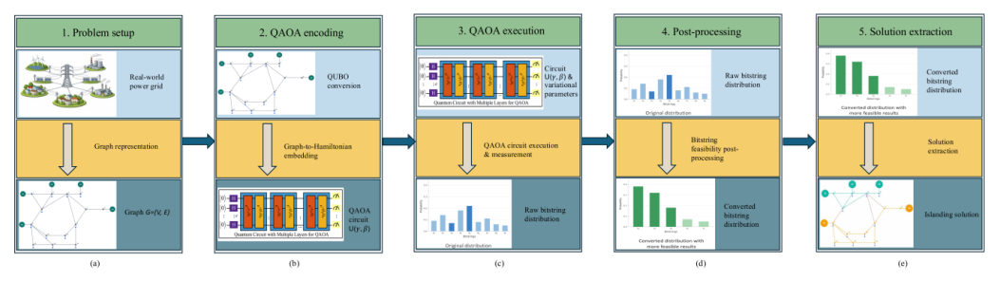
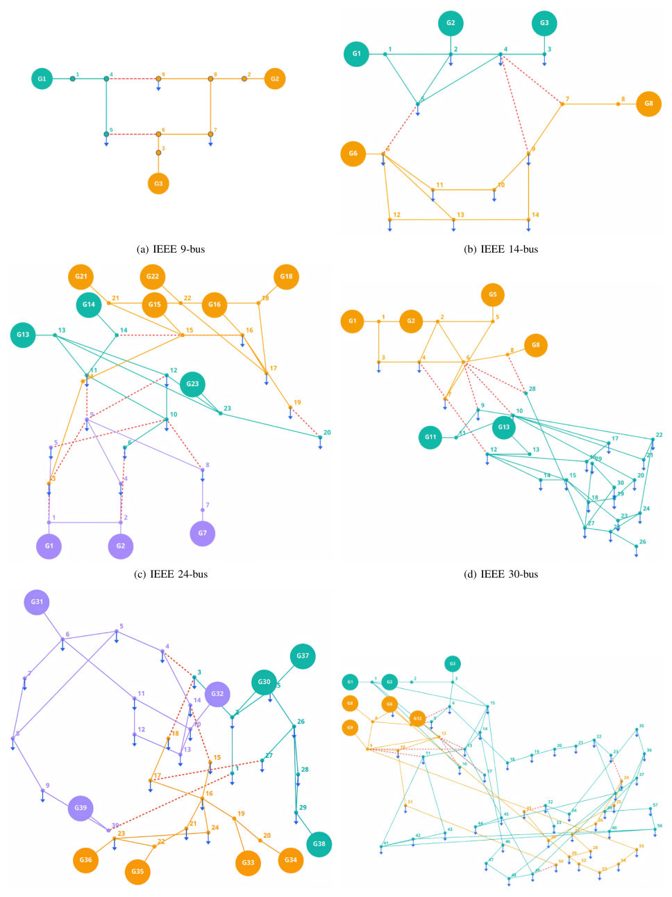
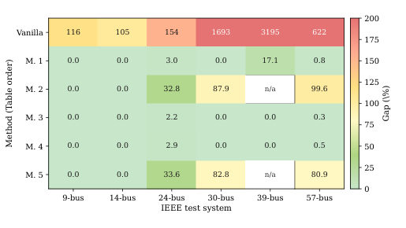
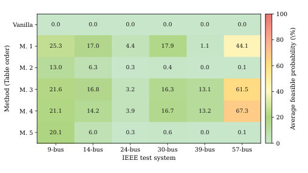
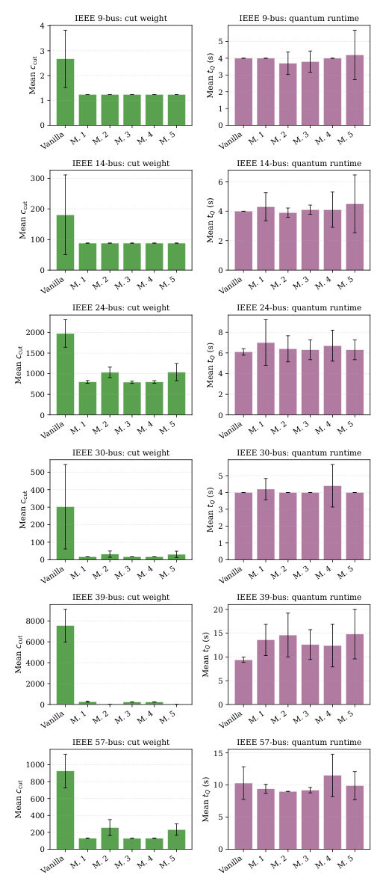
Summary. This work presents a resource-efficient hybrid QAOA framework to solve the NP-hard power system islanding problem by combining quantum optimization with advanced classical post-processing. The method successfully recovers near-optimal, fully feasible islanding partitions on standard benchmark grids using shallow circuits. It establishes that structured post-processing is key to achieving physical validity and demonstrating a clear quantum resource advantage.
Why it may be interesting. The rigorous development of energy descent frameworks (M. 3, M. 4, M. 5) with formal proofs of termination and feasibility is highly relevant to developing reliable quantum algorithms for complex physical systems beyond simple Hamiltonian simulation.
Main problem. Solving the NP-hard power system islanding problem, which requires partitioning a grid while satisfying complex physical constraints like power balance and connectivity.
Main result. A hybrid QAOA framework combining graph reduction and structured post-processing achieves Gurobi-optimal solution quality with a clear quantum resource advantage over vanilla QAOA on multiple IEEE benchmarks.
Method. The approach uses QAOA to minimize an objective function (cut value) encoded in a QUBO, followed by rigorous classical post-processing steps (like DFS and power flow checks) to enforce physical feasibility.
Model / system. The system is a power grid modeled as a graph where buses are partitioned into self-sufficient islands. The optimization involves minimizing the cut of active power flow while satisfying constraints on generator capacity, load balance, and connectivity.
Key observables. Feasible islanding decisions; minimized cut value (compared to Gurobi optimum); Power support margins ($P_{g, ext{max}} - P_d$ and $Q_{ ext{max}} - Q_d$).
Important parameters / regimes. Circuit depth ($p$), shot budget, penalty weights ($\lambda$), graph size (e.g., 57-bus IEEE system).
Assumptions / limitations. The core assumption is that structured post-processing can bridge the gap between raw quantum sampling outputs and physically realizable solutions; theoretical analysis relies on specific regularity hypotheses for convergence proofs.
Figures summary. Figures illustrate the overall pipeline (setup $ ightarrow$ QAOA encoding $ ightarrow$ Execution $ ightarrow$ Post-processing $ ightarrow$ Solution extraction) and compare power flow capabilities across various IEEE test cases.
Paper structure. The paper develops from defining the NP-hard problem, formulating it as a constrained QUBO Hamiltonian, proposing graph reduction techniques, detailing multiple staged repair/descent methods (M.1 to M.5), providing theoretical convergence guarantees for these methods, and finally validating the best hybrid workflow on real quantum hardware.
Quantum computing has rapidly emerged as a powerful paradigm for tackling computationally demanding problems. In particular, quantum optimization shows strong promise for hard combinatorial problems in power systems, where increasing distributed energy penetration heightens the need for intentional islanding to maintain grid reliability and resilience. However, power system islanding is an NP-hard combinatorial optimization problem that becomes computationally prohibitive for classical solvers as network size grows, motivating the use of quantum computing as a promising alternative pipeline. This study develops a resource-efficient hybrid QAOA islanding framework that brings physics-constrained power-system partitioning into the quantum optimization workflow. The framework combines coherency-informed graph reduction, physics-aware constraint modeling, and structured post-processing to efficiently convert shallow-circuit QAOA samples into high-quality feasible islanding decisions without deep circuits or large shot budgets. The proposed framework is validated on the standard IEEE benchmark systems (9-, 14-, 24-, 30-, 39-, and 57-bus), demonstrating that the hybrid workflow achieves Gurobi-optimal solution quality with a clear quantum resource advantage over vanilla QAOA, while the resulting islanding solutions satisfy all physical feasibility requirements after network separation. This study establishes QAOA-based islanding as a viable quantum approach for critical infrastructure, with structured post-processing as the key enabler of quantum resource efficiency.
Authors: Anand Sharma, Chen Liu, Daniele Coslovich, Misaki Ozawa
Type: theory · Category: disordered systems and neural networks · PDF: https://arxiv.org/pdf/2606.16013v1
Analysis basis: full PDF text, analyzed in chunks
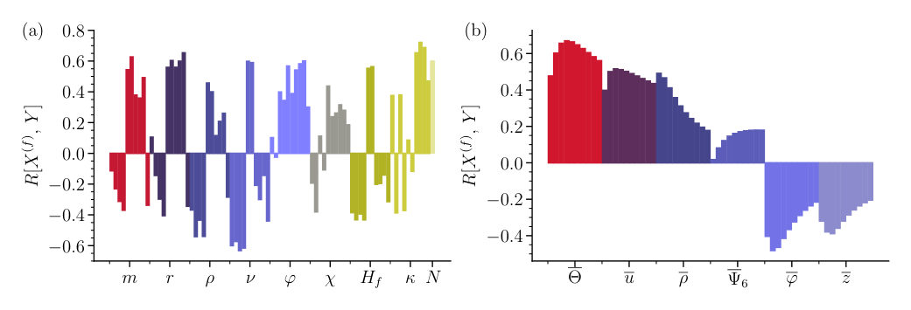
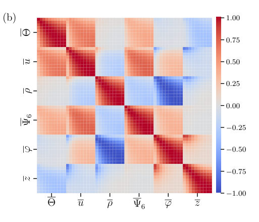
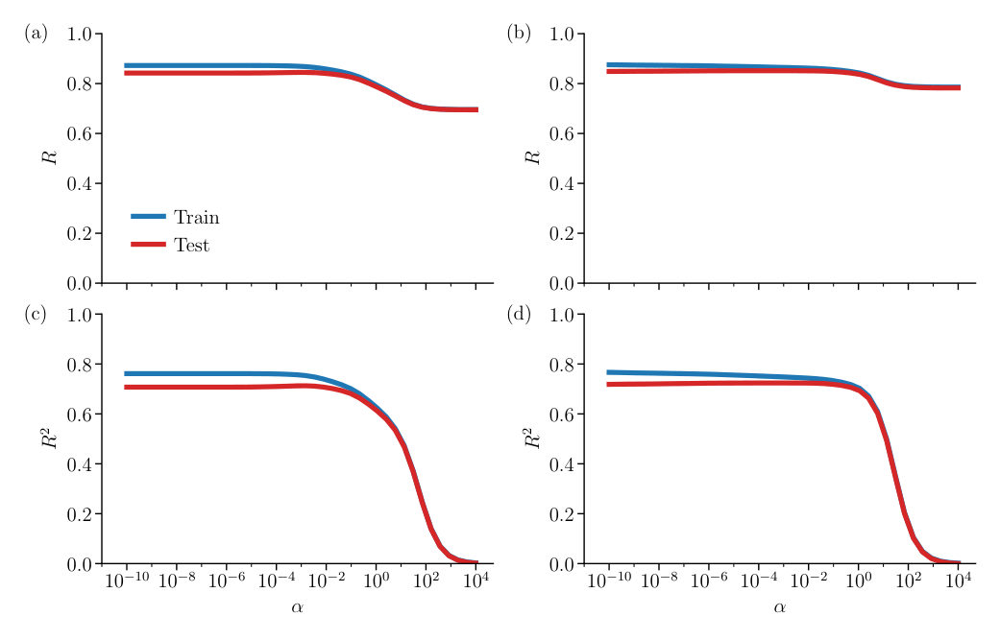
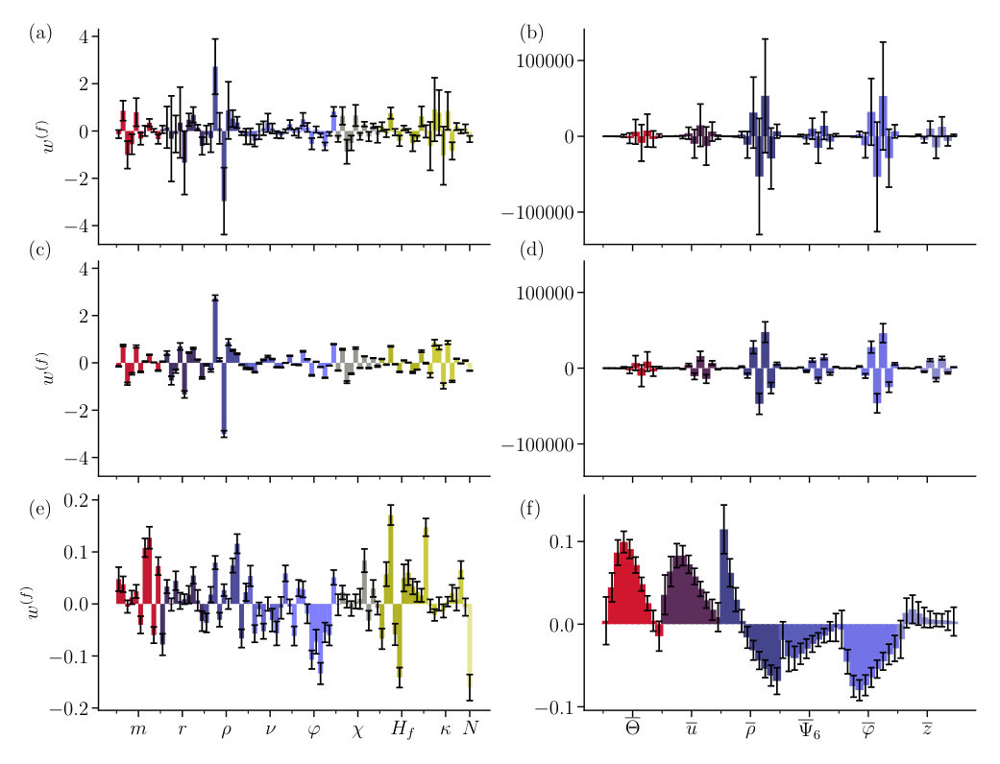
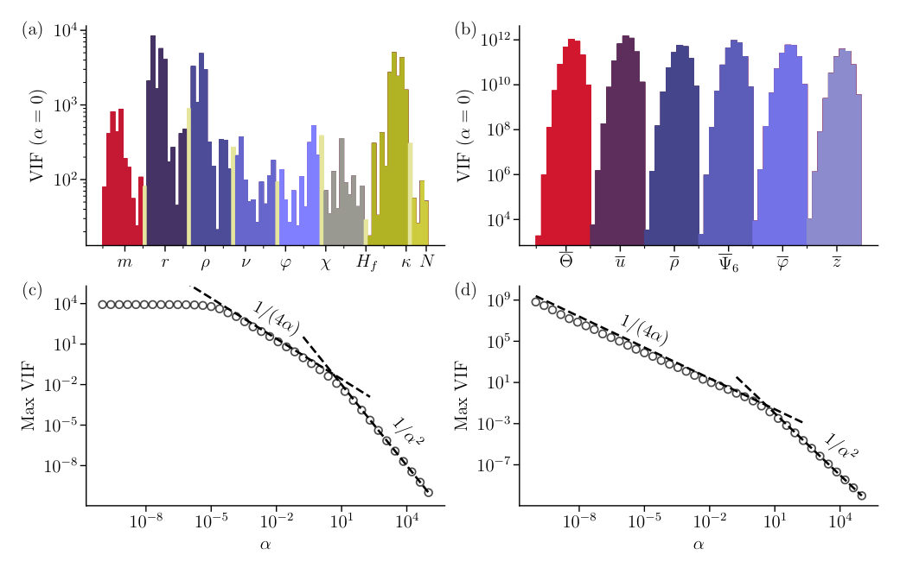
Summary. The paper rigorously analyzes why interpreting weights in linear regression fails when input features are highly correlated, even if predictions are accurate. Using eigenmode decomposition, it shows that multicollinearity generates unstable and oscillatory weight patterns. The key takeaway is that while regularization stabilizes the estimates, this stabilization does not equate to true physical interpretability.
Why it may be interesting. This work provides a rigorous mathematical framework connecting statistical concepts like multicollinearity and model instability to the physical concept of 'interpretability' in data-driven science. It suggests that prediction performance (low MSE) is insufficient for claiming physical understanding.
Main problem. The paper investigates the fundamental limits of interpretability when using multiple linear regression models, particularly when input features are strongly correlated (multicollinearity). It seeks to explain why weight estimates become unstable or oscillatory even if prediction accuracy remains high.
Main result. Multicollinearity causes weight instability through small-eigenvalue modes in the feature correlation matrix. While regularization like Ridge helps stabilize weights by suppressing these modes, it does not guarantee physical interpretability, as the resulting weights are highly dependent on the chosen regularization parameter alpha.
Method. The analysis combines theoretical linear algebra (analyzing eigenmodes of the feature correlation matrix) with statistical diagnostics (VIF calculation and analyzing weight fluctuations across bootstrap samples). It compares OLS and Ridge regression estimates.
Model / system. The model is Multiple Linear Regression ($\hat{\mathcal{Y}} = \sum \hat{w}(f) X(f)$), applied to diverse physical datasets such as superconductivity properties and glassy-dynamics structural descriptors. The analysis focuses on the mathematical structure imposed by highly correlated input features.
Key observables. Weight fluctuations (standard deviation across samples), weight oscillations across physically similar features, Maximum Variance Inflation Factor ($ ext{max } f{ ext{VIF}(f)}$), and the roughness measure ($S$).
Important parameters / regimes. Regularization strength $\alpha$, eigenvalues ($\lambda(k)$) of the feature correlation matrix $C$, and sample size $N_S$.
Assumptions / limitations. The analysis assumes that interpretability requires both statistical robustness (low weight variance) and physical consistency (stable signs/magnitudes for similar features). It models correlations using Toeplitz matrices in some sections.
Figures summary. Figures illustrate the three scaling regimes of $ ext{max } f{ ext{VIF}(f)}$ vs. $\alpha$ ($\propto \alpha^{-1}$ to $\propto \alpha^{-2}$), show weight oscillations decreasing with increasing regularization strength, and display eigenvectors corresponding to small eigenvalues.
Paper structure. The paper progresses from establishing the problem (weight instability under multicollinearity) to developing theoretical tools (eigenmode analysis, VIF generalization for Ridge). It then applies these tools across various datasets, culminating in a detailed mathematical derivation showing how regularization suppresses oscillatory modes associated with small eigenvalues.
Interpreting machine-learning models has attracted increasing attention, particularly in the physical sciences, where one often seeks to understand the underlying mechanisms rather than merely make predictions. Multiple linear regression is often regarded as an interpretable alternative to more complex models, such as deep neural networks, because its predictions are expressed as explicit weighted sums of input features. However, when input features are strongly correlated, namely in the presence of multicollinearity, the learned weights can exhibit large dataset-to-dataset fluctuations and oscillatory behavior across physically similar features, making their interpretation difficult or even impossible. Although the instability of the weights under multicollinearity is well known in statistics, its consequences for physical interpretation, in particular its connection to oscillatory weights across physically similar features, have not been systematically clarified. Here, we theoretically discuss the mechanism behind this loss of interpretability by analyzing the eigenmodes of the feature correlation matrix. We show that small-eigenvalue modes associated with multicollinearity amplify fluctuations in the weights and generate oscillatory patterns that do not necessarily reflect meaningful contributions. We test this theoretical picture numerically on physics datasets and show that Ridge regularization suppresses these unstable modes, although the resulting weights must still be interpreted with caution. We further confirm the generality of our findings beyond physics by analyzing a diverse collection of publicly available datasets. Our results clarify why, in the presence of multicollinearity, physical interpretation can remain difficult even for linear regression models.
Authors: Min-Hsiu Hsieh, Michael de Oliveira, Sathyawageeswar Subramanian, Xingjian Zhang
Type: theory · Category: quantum information and computing · PDF: https://arxiv.org/pdf/2606.16425v1
Analysis basis: full PDF text, analyzed in chunks
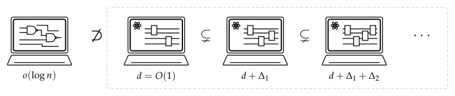
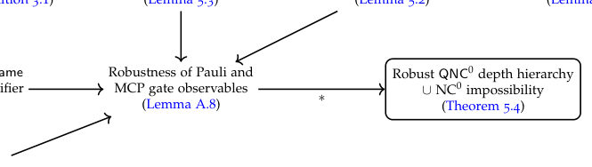
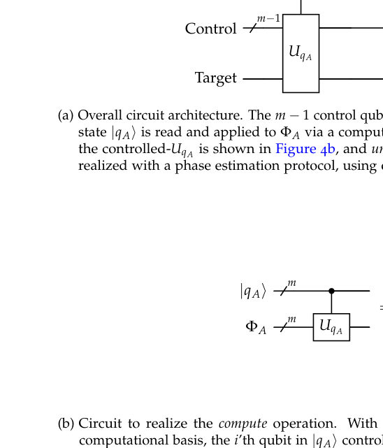
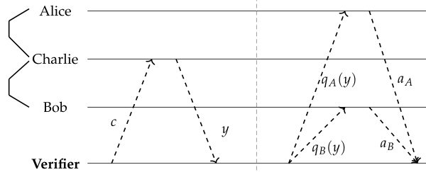
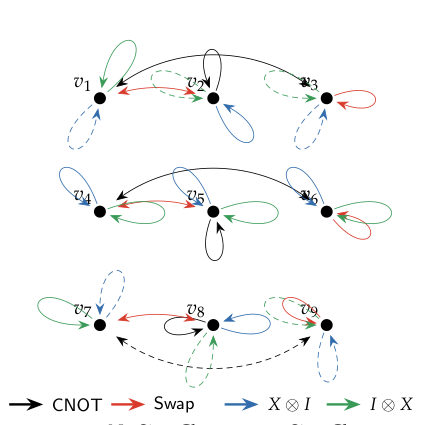
Summary. The paper establishes an explicit and unconditional depth hierarchy theorem for constant-depth quantum circuits ($ ext{QNC}^0$). By mapping computational tasks to nonlocal games defined by operator constraints, the authors prove that increasing circuit depth strictly increases computational power. This provides a rigorous measure of quantum advantage based solely on the required depth of the quantum circuit.
Why it may be interesting. This work provides fundamental complexity results by quantifying the resource cost of quantum computation in terms of circuit depth, which is a key metric for physical implementation constraints.
Main problem. The central problem is establishing an explicit, unconditional depth hierarchy for constant-depth quantum computation ($ ext{QNC}^0$), demonstrating that increasing circuit depth strictly increases computational power.
Main result. The authors prove a depth hierarchy theorem showing that certain two-round interactive problems require quantum circuits of depth $\Omega(d)$ to solve perfectly, while shallower circuits fail with significant probability. This establishes an unconditional quantum advantage over classical $ ext{NC}^0$ computation based purely on circuit depth.
Method. The methodology involves translating the computational problem into a rigid operator-valued constraint system derived from group theory and nonlocal games. Lower bounds are established by showing that perfect solutions require implementing multi-controlled phase operations, which necessitates deep circuits.
Model / system. The model is quantum computation realized via bounded fan-in quantum circuits over the Clifford+T gate set. The complexity is analyzed using two-round interactive problems and constraint systems derived from abelian groups like $\mathbb{Z}_m^2$.
Key observables. Circuit Depth ($d$), Success Probability ($\epsilon(d)$), Multi-controlled phase operations (e.g., $C_{m-1}(\mathbb{Z})$).
Important parameters / regimes. Depth $d$, precision $\epsilon$, and the number of qubits/labels $m$.
Assumptions / limitations. The lower bound proofs rely on constructing constraint systems whose unique faithful solutions require specific non-Clifford gates, and later sections address robustness under approximate state preparation.
Figures summary. Figure 1 schematically represents the established quantum depth hierarchies. Figure 2 shows logical dependencies for analyzing the quantum-input relation problem; Figure 3 shows dependencies for the classical verifier construction.
Paper structure. The paper develops from establishing the basic hierarchy using nonlocal games (Chunk 1), refining this by connecting it to operator constraints and self-testing in semi-quantum settings (Chunks 2, 4, 6), deriving specific depth lower bounds related to multi-controlled gates (Chunk 7), and finally analyzing upper bounds for generalized Toffoli gates (Chunk 8).
Circuit depth is a central resource in complexity theory. While bounded-depth classical circuits admit well-understood hierarchy theorems, the internal structure of constant-depth quantum computation remains comparatively unexplored. We prove an explicit depth hierarchy theorem for $\mathsf{QNC}^0$. For each $d\ge 12$, we construct a family of two-round interactive problems on which no depth-$(d-1)$ quantum circuit can achieve near-perfect success, regardless of gate set, circuit size, or ancillary qubits. In contrast, we prove that our construction admits realizations by simple bounded fan-in quantum circuits of depth larger than $d$ by a small constant factor. Moreover, all bounded fan-in classical circuits of sublogarithmic depth (in the input size) fail to achieve perfect success on these tasks for every $d$, yielding a hierarchy of problems that show unconditional quantum advantage of $\mathsf{QNC}^0$ over $\mathsf{NC}^0$. A key obstacle is the scarcity of lower bound techniques for quantum circuits. To address this, we develop methods to analyze how depth affects a circuit's ability to realize nonlocal correlations amongst its output qubits in a fine-grained manner. Our approach exploits the correspondence between constraint systems and nonlocal games, translating group-theoretic constructions into rigid operator-valued constraint systems and then into non-local games. In particular, we construct constraint systems whose unique faithful operator-valued solutions require every perfect strategy, and every near-perfect strategy to a fixed precision, to implement multi-controlled phase operations. This reduces to a nonlocal unitary-synthesis problem, yielding depth lower bounds for both shallow quantum and classical circuits. These results show that increasing depth strictly increases computational power within $\mathsf{QNC}^0$, establishing a genuinely quantum hierarchy.
Papers from cond-mat.mtrl-sci, mes-hall, other, soft, supr-con. These archives are de-prioritized — they appear at the end regardless of relevance score.
Authors: Patrick A. Lee
Type: theory · Category: strongly correlated electrons · PDF: https://arxiv.org/pdf/2606.16665v1
Analysis basis: full PDF text, analyzed in chunks
Topic relevance: 🔥 analog quantum simulation 4/5 · 🔥 correlated cavity matter 4/5 · Keldysh / 2PI / non-Gaussian methods 3/5 · correlated / nonlocal dissipation 3/5 · driven-dissipative phase transition 3/5 · methods for driven-dissipative 3/5 · Tavis-Cummings & cavity-many-emitter 2/5 · exotic spin models in light-matter 2/5 · non-equilibrium dynamics 2/5 · non-equilibrium universality 2/5 · spintronics-quantum-optics interface 2/5 · Kondo & dissipative impurity 1/5 · entanglement & information structure 1/5 · interference shaping light 1/5 · measurement-induced transitions 1/5
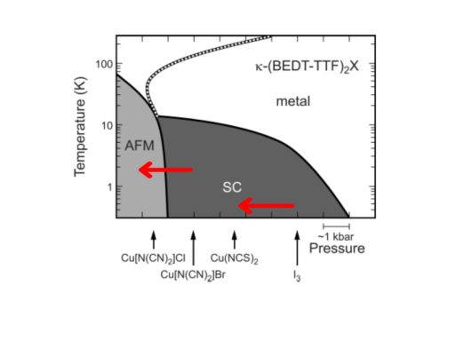
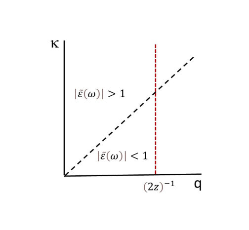
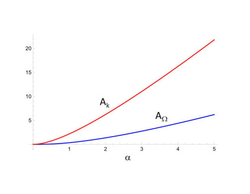
Summary. The paper theoretically predicts that the presence of a hyperbolic photon mode near a material can significantly alter its metal-insulator transition point. By coupling charge carriers to the enhanced zero-point electric field fluctuations from this mode, the system is effectively driven towards an insulating state. This effect is highly localized, decaying rapidly over just a few atomic layers.
Why it may be interesting. This work bridges quantum optics (hyperbolic modes, vacuum fluctuations) with condensed matter theory (Mott physics). The mechanism—using electromagnetic vacuum structure to tune electronic correlations—is highly relevant for understanding emergent phenomena in nanoscale heterostructures.
Main problem. The study investigates how coupling a material near a Mott transition to a hyperbolic photon mode (HM) can modify its electronic state.
Main result. The HM acts as a 'negative pressure,' significantly shifting the critical interaction strength ($U_c$) and potentially driving a metallic system towards an insulating state, especially at small separations.
Method. Theoretical calculations involving self-energy corrections ($\Sigma'$) to the charge boson Green's function, derived from coupling the electronic degrees of freedom to the enhanced photon density of states provided by the HM.
Model / system. The model involves an electronic system near a Mott transition (related to the Hubbard model) placed atop hexagonal Boron Nitride ($ ext{hBN}$), coupled via the hyperbolic photon mode. The charge dynamics are treated using a relativistic boson field approximation.
Key observables. Shift in the critical interaction strength ($ ilde{U}_c$), zero-point fluctuations in the electric field ($\langle |E(z)|^2 angle$), and the spectral function $ ho(\omega)$.
Important parameters / regimes. Distance ($z$) from the HM source (effect decays rapidly, e.g., $1/z^3$ or $1/z^2$), coupling constants ($C_k$, $Z$), and material-specific parameters like bandwidths.
Assumptions / limitations. The effect of the HM is assumed to decay rapidly with distance; approximations are made regarding small mass gaps, continuum limits for integration, and neglecting certain terms (e.g., diamagnetic $A^2$ term).
Figures summary. Figures illustrate the enhanced momentum phase space covered by the HM compared to ordinary photons, show generalized phase diagrams indicating a shift towards insulating states, and plot calculated functions related to coupling strengths.
Paper structure. The paper progresses from establishing the physical mechanism (HM enhancing DOS/field fluctuations) to deriving the theoretical modification of the electronic self-energy ($\Sigma'$), culminating in quantitative predictions for how this modifies the critical Mott transition point ($U_c$).
The hyperbolic mode (HM) refers to a polariton mode where the dielectric function is negative in some direction of propagation. Within a frequency window the light occupies a greatly expanded region in momentum space. We compute the photon density of states and find that the zero point fluctuation in the RMS electric field can reach $MV/cm$, comparable to the largest field used in pump probe experiments in the THz scale. The HM in hexagonal Boron Nitride (hBN) has been under intense study and we consider placing a material that is near the Mott transition directly on top hBN. We find that a substantial shift in the metal-insulator transition is possible, but the effect decays rapidly with distance, so that only a few monolayers are affected. We provide estimates and suggestions for a number of materials of interest.
Authors: A. N. Osipov, I. Y. Chestnov, P. G. Lagoudakis, A. V. Yulin
Type: theory · Category: other · PDF: https://arxiv.org/pdf/2606.16233v1
Analysis basis: full PDF text, analyzed in chunks
Topic relevance: 🔥 driven-dissipative phase transition 4/5 · 🔥 exotic spin models in light-matter 4/5 · analog quantum simulation 3/5 · correlated cavity matter 3/5 · methods for driven-dissipative 3/5 · non-equilibrium dynamics 3/5 · spintronics-quantum-optics interface 3/5 · correlated / nonlocal dissipation 2/5 · non-equilibrium universality 2/5 · Keldysh / 2PI / non-Gaussian methods 1/5 · Tavis-Cummings & cavity-many-emitter 1/5 · interference shaping light 1/5
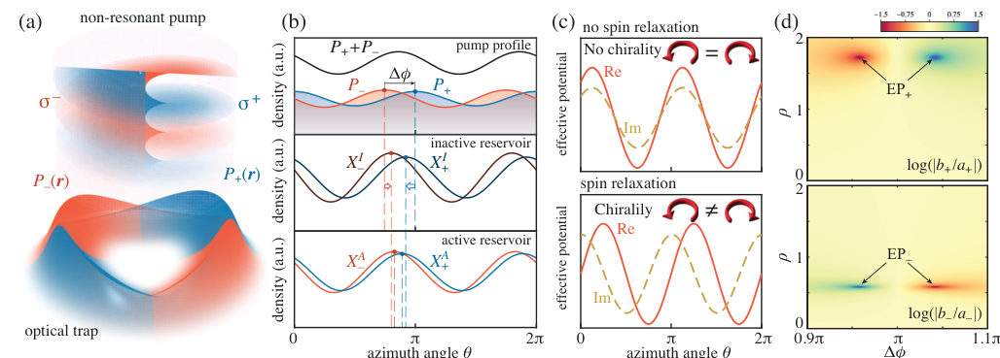
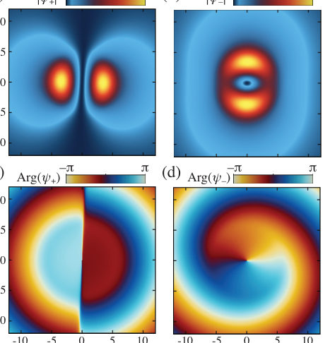
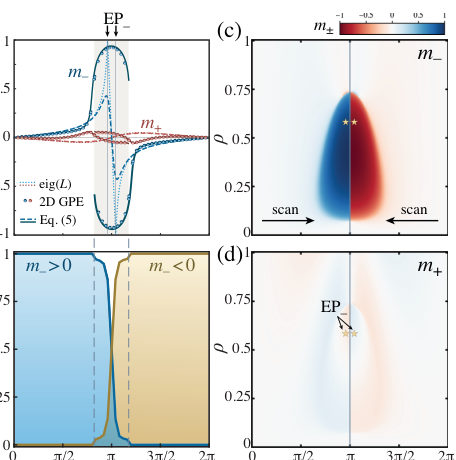
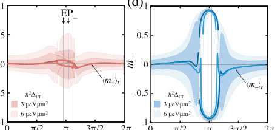
Summary. The paper reveals that exciton-polariton condensates can spontaneously develop chirality due to spin relaxation effects within the coupled reservoir system. This hidden non-Hermitian potential allows for the controlled, all-optical creation of half-vortices, where polarization components exhibit distinct topological winding numbers.
Why it may be interesting. This work provides a clean theoretical framework for generating topological structures (vortices) in quantum optical systems using internal degrees of freedom (spin/polarization) rather than external geometric controls, which is highly relevant to advanced quantum light sources and nonlinear optics.
Main problem. The study demonstrates how a spinor exciton-polariton condensate can spontaneously acquire chirality without external chiral driving fields.
Main result. This hidden chirality enables the all-optical formation of spin-selective half-vortices, where one polarization component acquires a definite phase winding while the other remains near zero winding.
Method. The analysis uses adiabatic elimination of fast reservoir dynamics to derive an effective non-Hermitian potential and subsequently analyzes coupled angular-mode equations.
Model / system. The system is modeled by a driven-dissipative Gross-Pitaevskii equation for the spinor order parameter, incorporating coupling to two distinct excitonic reservoirs (active and inactive).
Key observables. Spin-selective vorticity ($\sigma-$ component showing $2\pi$ winding vs. $\sigma+$ zero-winding), time-averaged angular momentum ($\langle m_\pm angle_t$), and the existence of Exceptional Points (EPs).
Important parameters / regimes. The relative phase shift between reservoir blueshifts, pump modulation depth ($ ho$), and parameters governing non-reciprocal coupling near EPs.
Assumptions / limitations. The analysis relies on adiabatic elimination of fast reservoir dynamics and approximations derived from low polariton densities in some theoretical sections.
Figures summary. Figures illustrate the mechanism (Fig. 1), show half-vortex states ($\sigma-$ winding vs $\sigma+$ dipole) (Fig. 2), map out angular momentum bistability near EPs (Fig. 3), and confirm robustness against fast oscillations from TE-TM splitting (Fig. 4).
Paper structure. The paper progresses from establishing the physical mechanism of hidden chirality via spin relaxation to deriving simplified coupled-mode equations, analyzing spectral features like Exceptional Points, and finally simulating the resulting half-vortex formation.
We show that a radially symmetric, nonresonantly pumped spinor exciton-polariton condensate can acquire chirality without a rotating drive, chiral geometry, or pump orbital angular momentum. Spin relaxation in a two-reservoir system shifts the reservoir-induced blueshift relative to the gain profile, creating an effective non-Hermitian chiral potential. A reduced angular-mode theory reveals tunable exceptional points and non-reciprocal coupling between counter-rotating modes. Full driven-dissipative Gross-Pitaevskii simulations show that this hidden chirality enables all-optical formation of spin-selective half-vortices.
Authors: J. Cao, K. L. Zhang, R. Wang, X. Z. Zhang
Type: theory · Category: other · PDF: https://arxiv.org/pdf/2606.15293v1
Analysis basis: full PDF text, analyzed in chunks
Topic relevance: 🔥 analog quantum simulation 4/5 · 🔥 non-equilibrium dynamics 4/5 · driven-dissipative phase transition 3/5 · exotic spin models in light-matter 3/5 · methods for driven-dissipative 3/5 · non-equilibrium universality 3/5 · spintronics-quantum-optics interface 2/5 · Frenkel-Kontorova 1/5 · Keldysh / 2PI / non-Gaussian methods 1/5 · Kondo & dissipative impurity 1/5 · correlated / nonlocal dissipation 1/5 · entanglement & information structure 1/5
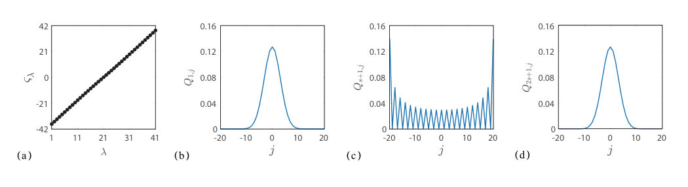
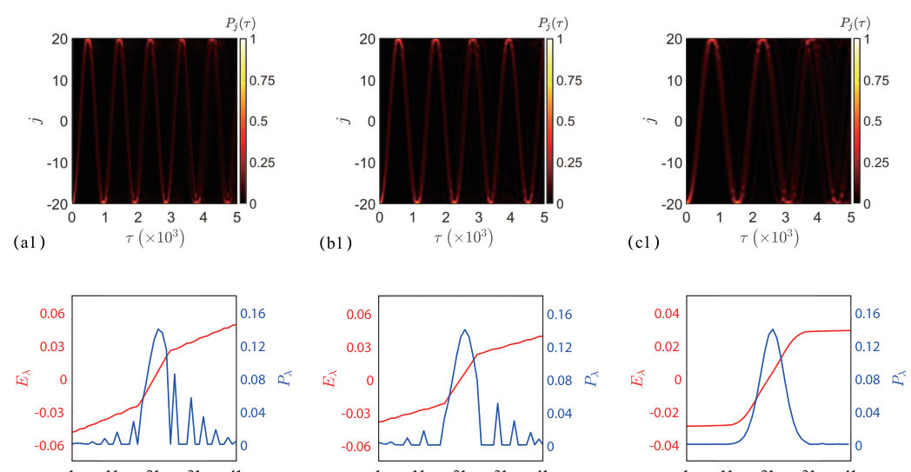
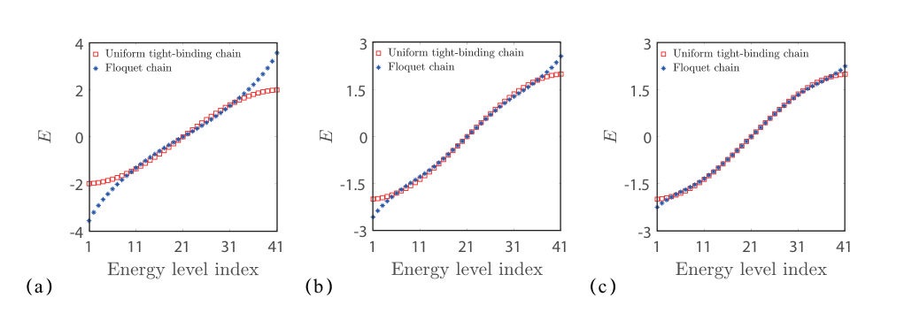
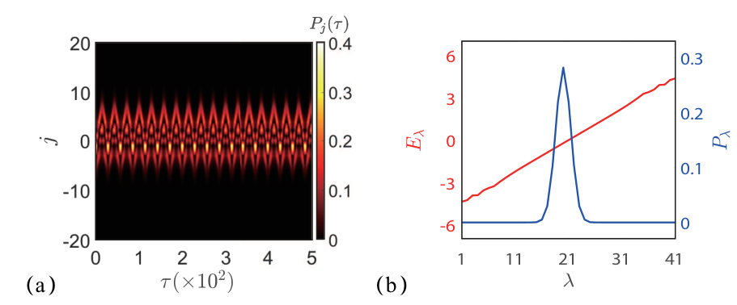
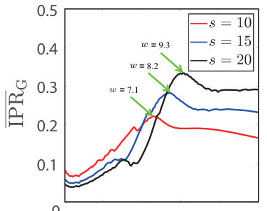
Summary. The paper analyzes a driven synthetic spin chain to understand how its localization properties depend on the external driving frequency ($\omega$). It finds that the system exhibits maximal state localization at an intermediate frequency ($\omega_{ ext{peak}}$), dictated by boundary coupling strengths. This establishes the model as a promising, tunable platform for controlling quantum information storage and retrieval in superconducting circuits.
Why it may be interesting. This work provides a concrete, tunable mechanism—the Floquet-Sambe bottleneck—to engineer quantum transport properties by controlling the driving frequency, which is highly relevant for superconducting circuit architectures.
Main problem. The study investigates how driving a synthetic spin chain with spatially inhomogeneous coupling leads to frequency-dependent localization phenomena, termed the Floquet-Sambe bottleneck.
Main result. The system exhibits maximal state localization at an intermediate driving frequency ($\omega_{ ext{peak}}$), which is controlled by the weakest boundary hopping scale. This nonmonotonic behavior is robustly observed in both closed and open-system diagnostics.
Method. The analysis employs Floquet theory, transforming the time-dependent problem into a static eigenvalue problem in an enlarged space, and utilizes Inverse Participation Ratios (IPR) to quantify localization.
Model / system. The model is a finite Floquet chain combining uniform hopping with a periodically rotating, SU(2)-dictated spin-assisted hopping profile. The resulting coupling strength varies spatially, being weakest at the boundaries.
Key observables. Mean Inverse Participation Ratio (MIPR) for closed systems and the energy-integrated IPR ($ ext{IPRG}(\omega)$) for open-system transport diagnostics.
Important parameters / regimes. Driving frequency ($\omega$), boundary bottleneck scale ($\mu_{-s} \sim \sqrt{2s}$), and the ratio of hopping to driving strength ($\eta_j = \mu_j / \omega$).
Assumptions / limitations. The analysis involves truncating the Fourier components for numerical simulation, and comparing limits such as $\omega o 0$ (adiabatic) and $\omega o \infty$ (high-frequency expansion).
Figures summary. Figures show the nonmonotonic MIPR profile peaking at $\omega_{ ext{peak}}$ for varying spin dimensions ($s$), and similarly demonstrate the peak in the open-system IPR ($ ext{IPRG}(\omega)$) shifting with $s$.
Paper structure. The paper systematically analyzes the system across different frequency regimes: low-$\omega$ (PST revival), intermediate $\omega$ (localization maximum at $\omega_{ ext{peak}}$ due to boundary bottleneck), and high-$\omega$ (effective tight-binding behavior via Magnus expansion).
We study a finite Floquet chain in which a uniform nearest-neighbor hopping coexists with a periodically rotating, \textrm{SU(2)}-dictated spin-assisted hopping profile. The resulting coupling is spatially inhomogeneous -- weakest at the chain boundaries and strongest in the bulk -- and produces a frequency-dependent Floquet-Sambe bottleneck. In the closed system, the mean inverse participation ratio (\textrm{MIPR}) of the Floquet eigenstates exhibits a striking nonmonotonic dependence on the driving frequency $ω$: the states remain extended at both low and high frequencies, but become maximally localized at an intermediate frequency. We demonstrate that this localization maximum occurs at $ω_{\mathrm{peak}}\sim μ_{-s}=\sqrt{% 2s}$, a scale controlled by the first boundary bottleneck. To connect these spectral properties to measurable transport, we construct an open-system Floquet-Sambe Green-function inverse participation ratio from the spatial density of the injected scattering state. This open-system diagnostic recovers the same nonmonotonic localization trend as its closed-system counterpart, with the peak shifted to higher frequencies by the static bandwidth and the lead self-energy. These findings establish the driven synthetic spin chain as a directly realizable, frequency-tunable platform for coherent information storage and retrieval, rooted in the interplay of Floquet-Sambe virtual channels, boundary-controlled localization, and frequency-selective transport in emerging multi-level superconducting circuit architectures.
Authors: Adrianus Yosia, Rahmi Rusin, Rudy Kusdiantara, Hadi Susanto
Type: theory · Category: other · PDF: https://arxiv.org/pdf/2606.15567v1
Analysis basis: full PDF text, analyzed in chunks
Topic relevance: 🔥 driven-dissipative phase transition 4/5 · Frenkel-Kontorova 3/5 · analog quantum simulation 3/5 · methods for driven-dissipative 3/5 · non-equilibrium dynamics 3/5 · correlated / nonlocal dissipation 2/5 · non-equilibrium universality 2/5 · Keldysh / 2PI / non-Gaussian methods 1/5 · Kondo & dissipative impurity 1/5
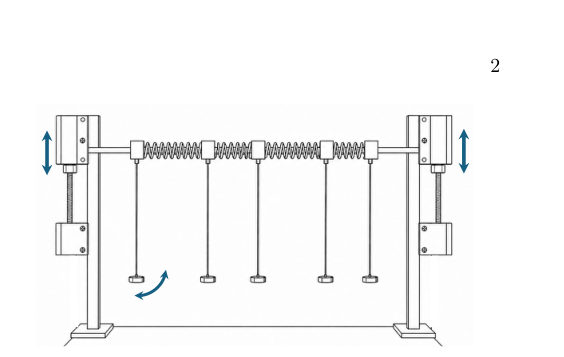
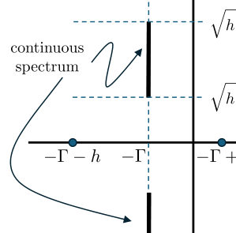
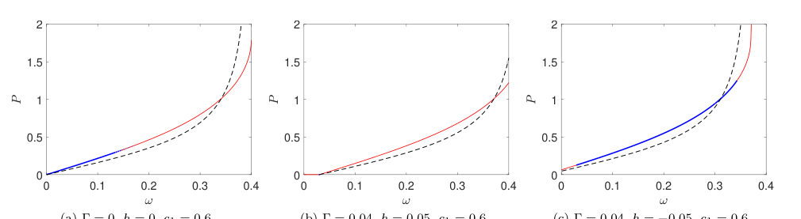
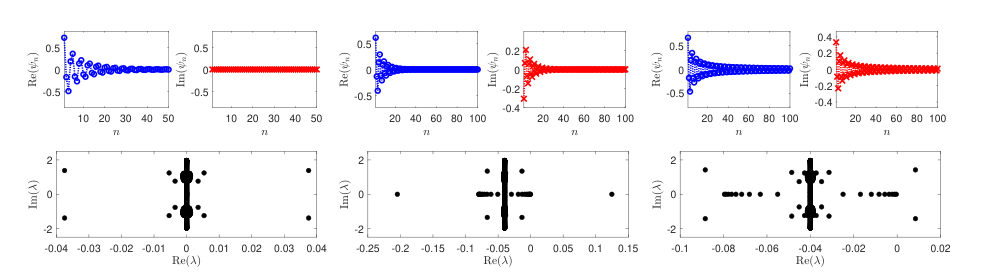
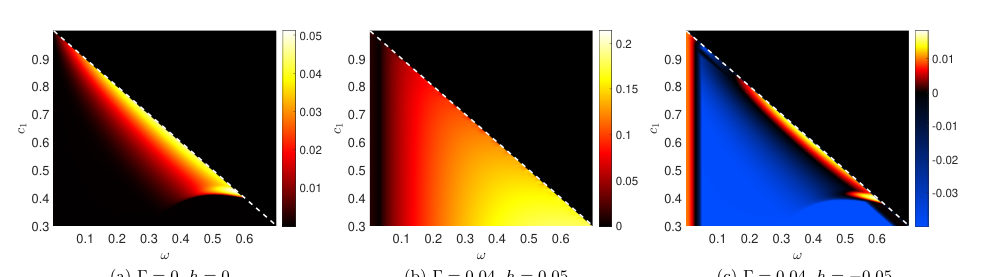
Summary. The paper analyzes how parametric driving and damping stabilize topological edge solitons in a nonlinear SSH lattice model. By deriving an effective amplitude equation, the authors show that these external forces create two distinct soliton branches with vastly different stabilities. This demonstrates that active control mechanisms can enhance the robustness of quantum-like localization phenomena.
Why it may be interesting. This work provides concrete theoretical tools (stability analysis of dissipative nonlinear systems) applicable to understanding robust localized excitations in active or driven quantum/classical lattices, which is highly relevant to open quantum system dynamics.
Main problem. The study investigates the dynamics and stabilization of topological edge solitons within a nonlinear Su–Schrieffer–Heeger (SSH) lattice that is subjected to both parametric driving and linear damping.
Main result. Parametric driving and damping fundamentally modify the system's edge-state family, generating two dissipative branches; one branch can exhibit significantly enhanced stability compared to the conservative case.
Method. The research employs analytical derivations from a driven pendulum chain, followed by numerical continuation and spectral stability analysis on an effective reduced SSH amplitude model.
Model / system. The system is modeled as a 1D lattice of pendula (analogous to SSH) governed by equations derived from a Klein-Gordon equation. The final effective model is a driven-damped discrete nonlinear Schrödinger type equation.
Key observables. Topological edge solitons, total power ($P$), and the real parts of linearization eigenvalues ($ ext{Re}(\lambda)$) used to determine stability.
Important parameters / regimes. Damping ($\Gamma$), parametric drive strength ($h$), detuning parameter ($\Delta$), and coupling constants ($c_{n}$).
Assumptions / limitations. The analysis assumes weak damping, small-amplitude oscillations, and utilizes an exponentially decaying spatial profile ansatz for the edge state approximation.
Figures summary. Figures illustrate experimental setups (pendulum chain), bifurcation diagrams showing total power vs. detuning, stationary edge-state profiles under different driving conditions, and time evolution comparisons between the reduced model and the full lattice dynamics.
Paper structure. The paper progresses from deriving an effective driven-damped SSH model from a physical pendulum chain to performing analytical calculations for phase-locked states, followed by detailed numerical stability analysis and comparison with direct time-domain simulations.
We study topological edge solitons in a nonlinear Su--Schrieffer--Heeger (SSH) lattice subject to parametric driving and linear damping. Starting from a vertically driven pendulum chain, we derive an effective driven--damped nonlinear SSH model and investigate its stationary edge-localized states. Analytical calculations reveal the existence of two phase-locked dissipative edge-soliton families that emerge from the nonlinear continuation of the topological edge mode. Using numerical continuation and spectral stability analysis, we construct the corresponding nonlinear branches and determine their stability properties. We show that parametric driving and damping fundamentally modify the conservative edge-state family by generating two dissipative branches with markedly different stability characteristics: one branch remains predominantly unstable, whereas the other develops substantially larger stability regions and significantly weaker instability growth rates. Direct numerical simulations further demonstrate that the robust branch can remain strongly localized over long time intervals even when weakly unstable. Simulations of the full driven--damped Klein--Gordon pendulum chain confirm the persistence of the edge-localized dynamics predicted by the reduced model. These results identify parametric driving and damping as an effective mechanism for enhancing the robustness and persistence of nonlinear topological localization in active lattice systems.
Authors: O. M. Konstantynov, S. I. Shevchenko
Type: theory · Category: quantum gases · PDF: https://arxiv.org/pdf/2606.16338v1
Analysis basis: full PDF text, analyzed in chunks
Topic relevance: 🔥 Keldysh / 2PI / non-Gaussian methods 4/5 · driven-dissipative phase transition 3/5 · methods for driven-dissipative 3/5 · non-equilibrium dynamics 3/5 · analog quantum simulation 2/5 · non-equilibrium universality 2/5 · Kondo & dissipative impurity 1/5 · correlated / nonlocal dissipation 1/5 · correlated cavity matter 1/5
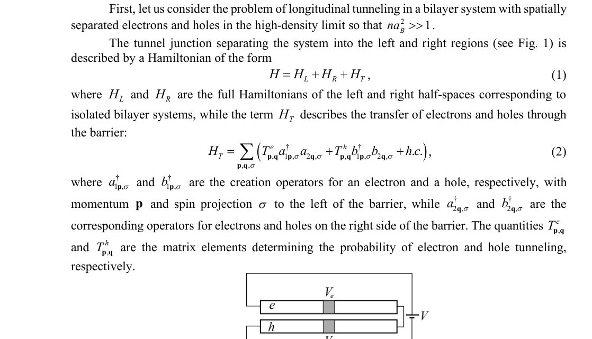
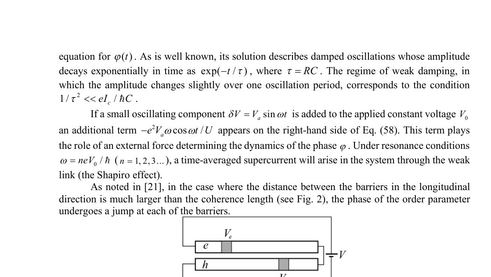
Summary. This theoretical work examines the Josephson effect in electron-hole bilayers, modeling tunneling currents under an external voltage. By analyzing high-density versus low-density regimes, it reveals fundamental differences in current behavior, particularly the emergence of dissipative damping in the excitonic (low-density) limit. The methodology combines advanced many-body techniques with condensed matter physics principles.
Why it may be interesting. It connects concepts from superconductivity (Josephson effect) with quantum gas physics (exciton BEC), providing a rich platform to study non-equilibrium dynamics, dissipation, and phase coherence in artificial quantum systems.
Main problem. The study investigates the non-stationary longitudinal Josephson effect occurring in electron-hole bilayers where pairing occurs between spatially separated electrons and holes.
Main result. The system exhibits distinct behaviors depending on carrier density: high-density limits show only supercurrent below a threshold voltage, while low-density regimes feature finite dissipative currents even at zero temperature due to gapless excitations.
Method. The analysis employs the tunneling Hamiltonian approach combined with Green's function techniques and perturbation theory to calculate various current components (quasiparticle, superconducting, interference).
Model / system. The model is an electron-hole bilayer system weakly coupled by a tunnel junction. It is analyzed in two limits: high-density (momentum space pairing) and low-density (Bose-Einstein condensate of excitons).
Key observables. Tunneling current ($I_t$), quasiparticle current ($qI$), supercurrent components, and the relative phase difference ($\varphi_{eh}$).
Important parameters / regimes. External applied voltage ($V_t$), carrier density (determining high vs. low-density regime), and energy gap ($\Delta$).
Assumptions / limitations. The analysis relies on perturbation theory for weak tunneling, treating the system in both BCS-like (high-density) and bosonic/coherent state (low-density) approximations.
Figures summary. Figure 1 schematically illustrates the bilayer structure with weak coupling; Figure 2 likely shows phase evolution or current characteristics related to Josephson dynamics.
Paper structure. The paper progresses by setting up the Hamiltonian, deriving current expressions using Green's functions in various limits (high/low density), and finally analyzing the resulting dynamical equations for the superconducting phase difference under applied voltage.
The non-stationary longitudinal Josephson effect in bilayer systems with pairing of spatially separated electrons and holes is investigated. The tunneling current between two (right and left) weakly coupled electron-hole condensates is analyzed in the presence of an external voltage applied along the layers. Two limiting regimes are considered: the high-density regime, where pairing occurs in momentum space similarly to conventional superconductors, and the low-density regime corresponding to a Bose-Einstein condensate of spatially indirect excitons. Using the tunneling Hamiltonian approach, expressions for the quasiparticle, superconducting and interference contributions to the tunneling current are derived. It is shown that in the high-density limit the quasiparticle and interference currents vanish at zero temperature below a threshold voltage determined by the energy gap, so that only the supercurrent remains. In contrast, in the low-density regime the gapless spectrum of collective excitations leads to finite dissipative contributions even at zero temperature, resulting in damping of Josephson oscillations. For spatially separated tunneling barriers with distance exceeding the coherence length, phase jumps occur at each barrier, resulting in voltage oscillations across the electron and hole barriers and a non-sinusoidal current-phase relation governed by the critical currents of the two barriers.
Authors: Faustino Palmero Ramos, Avadh Saxena, Panayotis G. Kevrekidis
Type: theory · Category: other · PDF: https://arxiv.org/pdf/2606.15855v1
Analysis basis: full PDF text, analyzed in chunks
Topic relevance: 🔥 analog quantum simulation 4/5 · exotic spin models in light-matter 3/5 · driven-dissipative phase transition 2/5 · methods for driven-dissipative 2/5 · non-equilibrium dynamics 2/5 · Frenkel-Kontorova 1/5 · Keldysh / 2PI / non-Gaussian methods 1/5 · entanglement & information structure 1/5 · non-equilibrium universality 1/5 · spintronics-quantum-optics interface 1/5
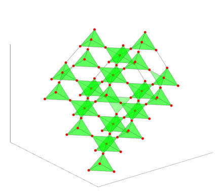
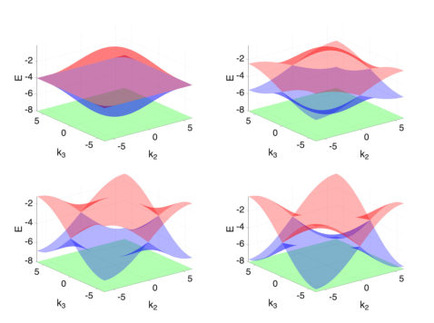
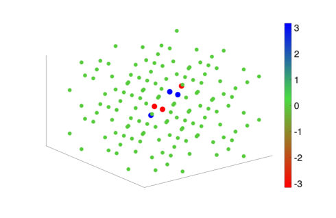
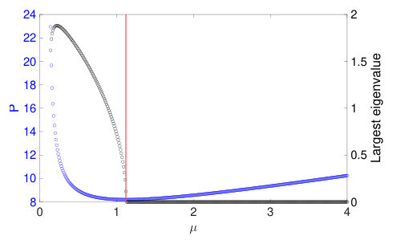
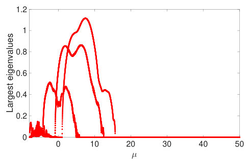
Summary. The paper investigates nonlinear localized states on a pyrochlore lattice modeled by the DNLS equation. It performs detailed stability analyses on solitons and vortices, finding that their stability is strongly dependent on whether the nonlinearity is focusing or defocusing. These results highlight how topology and dispersion govern complex wave behavior in 3D quantum systems.
Why it may be interesting. This work directly addresses the interplay between topology (flat bands), nonlinearity, and wave localization in 3D lattices, which is highly relevant for understanding exotic quantum phenomena in optical or magnetic systems.
Main problem. The study explores nonlinear localized states, such as solitons and vortices, on a pyrochlore lattice using a dispersive nonlinear dynamical model.
Main result. The stability of these localized states depends critically on the nonlinearity type (focusing vs. defocusing) and the topological charge of the vortex, revealing complex interplay between topology and dispersion.
Method. Stability analysis is performed by linearizing the system around stationary solutions and calculating eigenvalues of the resulting operator, often utilizing the Anti-Continuum limit for theoretical guidance.
Model / system. The model uses the discrete nonlinear Schrödinger (DNLS) equation on a pyrochlore lattice, which is a 3D structure possessing flat bands in its linear spectrum. This system relates to physical contexts like frustrated magnetism or nonlinear optics.
Key observables. Stability eigenvalues ($\lambda$), topological charge ($S$), and the existence/stability of compact localized modes.
Important parameters / regimes. Nonlinearity coefficient ($\gamma$), coupling strength ($C$), propagation constant ($\mu$), and the nonlinearity regime (focusing vs. defocusing).
Assumptions / limitations. The analysis often relies on assuming a standing wave Ansatz and analyzing quasi-two-dimensional configurations, though genuine 3D study is suggested for future work.
Figures summary. Figures illustrate the lattice structure, the dispersive/flat bands, and show eigenvalue plots demonstrating stability boundaries as functions of $\mu$ for different state types (solitons, vortices).
Paper structure. The paper progresses from setting up the model on the pyrochlore lattice to analyzing linear spectra, then details the analysis of fundamental solitons and vortex structures, culminating in a detailed comparison of their stability across focusing and defocusing nonlinear regimes.
In the present work we explore a prototypical three-dimensional (3d) lattice possessing a flat band in the form of a pyrochlore lattice in the context of a dispersive nonlinear dynamical model, namely the discrete nonlinear Schrödinger (DNLS) equation. We set up the corresponding steady state and dynamical problems and discuss the linear spectrum of the relevant model before delving into a more detailed analysis of the nonlinear equilibria of the system. For the latter, we analyze the more well-established -- at the DNLS level -- fundamental discrete soliton states, as well as vortex structures. For the fundamental solitary waves, we connect their existence and stability with how they approach the linear bands. In the vortex case, we identify their stability features for vortices of topological charge $S=1$ and $S=2$ with those of the honeycomb and triangular lattices. An arguably even more intriguing feature of the pyrochlore lattice concerns the compactly supported nonlinear eigenstates stemming from the flat band of the linear spectrum. These compact localized modes are found to possess oscillatory instabilities for a range of propagation constants in the focusing case, although they can be stable in the latter, while they are found to be subject to symmetry-breaking instabilities in the defocusing nonlinearity case. These results offer a glimpse at the nexus of topology, flat band systems and dispersive nonlinear lattices in three spatial dimensions and as such may be a starting point toward a deeper exploration of such an intriguing interplay.
Authors: Sayak Bhowmik, Arijit Saha, Tanay Nag
Type: theory · Category: other · PDF: https://arxiv.org/pdf/2606.16459v1
Analysis basis: full PDF text, analyzed in chunks
Topic relevance: 🔥 non-equilibrium dynamics 4/5 · Keldysh / 2PI / non-Gaussian methods 3/5 · driven-dissipative phase transition 3/5 · methods for driven-dissipative 3/5 · non-equilibrium universality 2/5 · Kondo & dissipative impurity 1/5 · analog quantum simulation 1/5
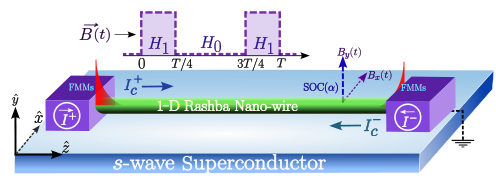
Summary. The paper theoretically explores how applying a periodic drive to a Rashba nanowire can induce a finite momentum Fulde-Ferrell superconducting state. This state manifests as pronounced nonreciprocal supercurrents, leading directly to the Superconducting Diode Effect (SDE). The findings demonstrate that this effect is controllable by tuning the driving parameters.
Why it may be interesting. This work bridges concepts from topological superconductivity (Majorana modes) with non-equilibrium transport phenomena (SDE) using time-periodic driving, which is highly relevant for designing novel superconducting electronic devices.
Main problem. The study investigates the emergence of a finite momentum Fulde-Ferrell (FF) superconducting state in a driven Rashba nanowire, linking this phenomenon to the Superconducting Diode Effect (SDE).
Main result. The periodic drive stabilizes a Floquet-induced FF superconducting state, enabling controllable switching between topological Majorana modes and realizing pronounced nonreciprocal supercurrent signatures indicative of SDE.
Method. Theoretical analysis employing the Floquet formalism combined with self-consistent mean-field calculations to determine the superconducting order parameter and current response.
Model / system. The system is a 1D Rashba nanowire proximitized to an s-wave superconductor, subjected to time-periodic modulation of in-plane and out-of-plane magnetic fields (Floquet drive).
Key observables. Nonreciprocal supercurrent signatures ($I^+_c eq I^-_c$), Floquet Majorana 0- and $\pi$-modes, diode efficiency ($\eta$), and the finite Cooper pair momentum ($q_0$).
Important parameters / regimes. Drive amplitude, chemical potential ($\mu$), and the presence/magnitude of a static magnetic field component ($B_y$) are crucial tuning parameters.
Assumptions / limitations. The analysis relies on the Floquet formalism to treat the time-periodic driving and uses self-consistent mean-field theory for superconducting pairing.
Figures summary. Figures illustrate schematic setups, quasienergy spectra showing topological phase diagrams (0- vs. $\pi$-FMMs), supercurrent density profiles confirming nonreciprocity, and dependence of diode efficiency on driving parameters.
Paper structure. The paper progresses from establishing the model Hamiltonian under periodic drive to analyzing the resulting Floquet topology via spectral analysis, followed by self-consistent calculations that confirm finite momentum pairing and quantify the resultant SDE.
Much has been studied on Floquet engineering in Rashba nanowire model regarding topological superconductivity hosting Majorana $0$- and anomalous $π$-modes, here we theoretically investigate the possible emergence of finite momentum Fulde-Ferrell (FF) superconducting state in quasi-energy of the above model under the periodic modulation of in-plane and out-of-plane magnetic fields while the static limit does not host a FF ground state. We demonstrate controllable switching between Floquet Majorana $0$- and $π$-modes via reversal of the supercurrent direction, revealing pronounced nonreciprocal supercurrent signatures which is a manifestation of the FF pairing. We validate the onset of FF pairing following a self-consistent mean-field analysis where externally applied supercurrent facilitates nonreciprocal signatures in quasi-energy spectra. The above findings directly indicates to the intriguing phenomenon of superconducting diode effect (SDE). The drive amplitude serves as a parameter to regulate the diode efficiency with chemical potential. Our study thus reveals a rich interplay between Floquet topological superconductivity and finite-momentum FF pairing, providing a tunable way to switch between different Floquet Majorana modes and realize the SDE with high efficiency.
Authors: Amrita Majumder, Janhavi Khunte, Ikshvaku Shyam, Rohit Kumar, and Anshuman Kumar
Type: experiment · Category: quantum information and computing · PDF: https://arxiv.org/pdf/2606.16977v1
Analysis basis: full PDF text, analyzed in chunks
Topic relevance: 🔥 QC/QI experiment 4/5 · quantum optics experiment 3/5 · quantum measurements 2/5 · analog quantum simulation 1/5 · correlated / nonlocal dissipation 1/5 · driven-dissipative phase transition 1/5 · interference shaping light 1/5 · methods for driven-dissipative 1/5
Summary. The authors report on the deterministic creation and characterization of single-photon emitters in hexagonal boron nitride ($ ext{hBN}$) using controlled electron irradiation. They establish a dose window that maximizes emitter purity ($g^{(2)}(0) \ll 1$) while also demonstrating remarkable thermal robustness, with functionality maintained up to $300^\circ ext{C}$. This work advances the field by providing quantitative control over both the creation process and operational temperature range for quantum light sources.
Why it may be interesting. This work provides a crucial experimental demonstration of scalable, high-performance quantum light sources operating at ambient temperatures, directly relevant for developing practical photonic quantum technologies.
Main problem. The study aims to systematically investigate how electron dose controls the properties of single-photon emitters (SPEs) in hexagonal boron nitride ($ ext{hBN}$), and to characterize their emission behavior above room temperature.
Main result. High-purity SPEs are deterministically created via controlled electron irradiation, exhibiting robust performance with reversible thermal quenching up to $300^\circ ext{C}$. The purity is confirmed by low second-order correlation values ($g^{(2)}(0) \le 0.16$).
Method. The researchers used localized electron-beam irradiation coupled with photoluminescence microscopy, time-resolved measurements, and Hanbury-Brown and Twiss interferometry to characterize the emitters.
Model / system. The physical platform is single-photon emitters embedded in hexagonal boron nitride ($ ext{hBN}$), which are activated deterministically using a focused electron beam. The system's performance is mapped against the accumulated electron dose and temperature.
Key observables. Second-order autocorrelation function ($g^{(2)}(0)$), spectral purity (ZPL vs. PSB assignment), emission yield, lifetime ($ au$), Signal-to-Background Ratio ($ ext{SBR}$), and photoluminescence intensity as a function of temperature.
Important parameters / regimes. Electron dose (controlled by irradiation time), Temperature ($300^\circ ext{C}$ maximum), $g^{(2)}(0)$ values ($\sim 0.09$ to $0.16$).
Assumptions / limitations. The primary assumption is that the observed spectral features and quantum statistics are dominated by the localized emitter, rather than background or non-radiative processes.
Figures summary. Figures illustrate PL maps showing dose dependence (Fig. 2a), spectral evolution vs. dose (Fig. 2b), lifetime/SBR dependence on dose (Figs. 2c/d), and confirmation of high purity across different flake thicknesses (Fig. 3).
Paper structure. The paper systematically details the methodology for dose-controlled emitter creation, presents quantitative data mapping performance metrics (purity, spectrum) against electron dose, confirms spectral assignments (PSB/ZPL), and finally demonstrates thermal stability up to $300^\circ ext{C}$.
Electron-beam irradiation is an established route to create site-controlled, room-temperature single-photon emitters (SPEs) in hexagonal boron nitride (hBN), but two aspects remain underexplored: how the electron dose governs the properties of the resulting single emitters, and how the emission behaves when the host is heated above room temperature. Here, we create emitters deterministically with a focused electron beam and confirm single-photon emission across three independent flakes, with $g^{(2)}(0)=0.09$, $0.12$, and $0.16$. We map the single-emitter response (yield, spectrum, lifetime, and photon purity) as a function of electron dose, identifying an optimal window for high-purity single emitters. Consistent with recent cryogenic studies, we assign the bright room-temperature feature near 575 n to the phonon sideband (PSB) of a green--yellow emitter whose zero-phonon line (ZPL) lies near 548 nm. Temperature-dependent photoluminescence measured in situ under real-time from room temperature to 300 degrees C reveals a thermal quenching that is fully reversible upon cooling, in contrast to the irreversible annealing-induced degradation reported elsewhere, indicating that transient heating does not permanently damage the centers. These results add quantitative dose control and above-room-temperature operation to the toolbox for deterministic hBN quantum-light sources.
Authors: Miguel A. Cazalilla, Chen-How Huang
Type: theory · Category: strongly correlated electrons · PDF: https://arxiv.org/pdf/2606.15721v1
Analysis basis: full PDF text, analyzed in chunks
Topic relevance: 🔥 Kondo & dissipative impurity 4/5 · Keldysh / 2PI / non-Gaussian methods 1/5
Summary. This theoretical study analyzes the interplay between magnetic impurities and superconducting hosts exhibiting pseudogaps. Using advanced techniques like NRG and RG, it maps out the phase diagram showing a transition between local moment (doublet) and spin-singlet (PSC) ground states. The findings are crucial for understanding exotic quantum phenomena in unconventional superconductors.
Why it may be interesting. This work directly addresses how strong local correlations (Kondo physics) interact with unconventional pairing symmetries (d-wave/pseudogap superconductivity), which is a central theme in modern condensed matter theory relevant to high-Tc superconductors and quantum materials.
Main problem. The study investigates the ground-state phase diagram and single-particle excitations of a magnetic impurity coupled to superconducting or pseudogap host materials.
Main result. The system exhibits a doublet-singlet transition, which can be driven by the chemical potential rather than solely by the Kondo coupling strength. The strong coupling limit favors a spin-singlet state (PSC) over a local moment (LM) state when pairing potentials are present.
Method. The analysis employs advanced theoretical techniques including effective field theory derived from strong coupling expansions, Numerical Renormalization Group (NRG), and Renormalization Group (RG) flow equations in Nambu space.
Model / system. The model describes a spin-1/2 magnetic impurity coupled to itinerant fermions forming a superconducting host with a pseudogap tunneling density of states $ ho(\epsilon) \sim |\epsilon|^r$. The Hamiltonian incorporates Kondo coupling, pairing potentials ($\Delta$), and scattering terms.
Key observables. Ground state phase diagram (singlet vs. doublet), T-matrix spectral function $A(\omega)$, and the anomalous Green's function components ($F_0$).
Important parameters / regimes. Kondo coupling strength ($J$), pairing potential ($\Delta$), pseudogap exponent ($r$), chemical potential ($\mu$), and scattering potential ($V$).
Assumptions / limitations. The analysis relies on strong coupling expansions, low-energy limits (e.g., $|\omega_n| \ll J$ or $\Delta$), and approximations like the BCS mean-field theory for the host.
Figures summary. Figures illustrate phase diagrams showing the competition between singlet and doublet phases as a function of various parameters ($V$, $\mu$, $r$).
Paper structure. The paper progresses by establishing the model Hamiltonian, deriving effective actions via path integrals (integrating out bath degrees of freedom), applying RG analysis to determine stability regimes, and finally analyzing specific spectral features like resonance-like excitations.
Combining effective field theory and numerical renormalization-group (NRG), we study the ground-state phase diagram and single-particle excitations of a spin-$\tfrac{1}{2}$ impurity in a superconducting system with a tunneling density of states behaving as $ρ(ε) \sim |ε|^{r}$, for $|ε|\gg Δ$ ($Δ$ being the $s$-wave pairing potential). We focus on the properties of the doublet-singlet transition at large Kondo coupling. The effective field theory for the singlet phase is inferred from a strong coupling expansion in the Kondo coupling. For $Δ\neq 0$, it contains a local pairing term which drives the system into a spin-singlet phase with enhanced paring correlations. We study how the singet-doublet phase boundary is affected by particle-hole symmetry breaking perturbations such as a scattering potential and/or the chemical potential. Results for the $T$-matrix spectral function are also reported near the transition both at particle-hole symmetry and away from it. It is shown that the singlet-doublet transition can be induced by the chemical potential rather than the Kondo coupling strength. At particle-hole symmetry, a resonance-like feature is observed for $r= 1$ and related to a two-quasiparticle excitation using a single-site model which is derived from effective field theory.
Authors: Aleksey Berg, Tim Matthies, Roland Wiesendanger, Elena Y. Vedmedenko
Type: theory · Category: other · PDF: https://arxiv.org/pdf/2606.15212v1
Analysis basis: full PDF text, analyzed in chunks
Topic relevance: exotic spin models in light-matter 3/5 · spintronics-quantum-optics interface 3/5 · analog quantum simulation 2/5 · driven-dissipative phase transition 2/5 · methods for driven-dissipative 2/5 · non-equilibrium dynamics 2/5 · Frenkel-Kontorova 1/5 · Keldysh / 2PI / non-Gaussian methods 1/5 · correlated / nonlocal dissipation 1/5 · non-equilibrium universality 1/5
Summary. This work demonstrates that antiferromagnetic skyrmions can be efficiently created and moved in magnetic racetracks solely by manipulating the local magnetization at the sample edges. By comparing these results to ferromagnetic counterparts, the authors show that AFM systems offer superior performance, particularly regarding operational frequency limits and energy efficiency for this boundary-driven process.
Why it may be interesting. While focused on condensed matter magnetism, the controlled manipulation of topological excitations (skyrmions) via boundary conditions and non-global driving forces shares conceptual links with controlling quantum states in engineered systems, making it relevant to understanding dissipation and state preparation in open quantum systems.
Main problem. The research aims to develop efficient, current-free methods for generating and transporting topological magnetic skyrmions within antiferromagnetic (AFM) racetrack architectures.
Main result. Local manipulation of the magnetization at the sample boundary—either through smooth rotation or switching—can efficiently generate and move AFM skyrmions, showing advantages over ferromagnetic counterparts in terms of frequency limits and robustness.
Method. The study uses atomistic simulations based on the Landau-Lifshitz-Gilbert equation, analyzing the dynamics using analytical approximations like the Thiele equation for skyrmion motion.
Model / system. The system is an AFM racetrack modeled on a lattice, governed by an effective Hamiltonian derived from the underlying magnetic interactions. Dynamics are simulated by applying local boundary fields ($\mathbf{B}_{ ext{edge}}$) that drive magnetization rotation or switching.
Key observables. Skyrmion position ($d$ vs $t$), propagation velocity ($\mathbf{v}_x$), skyrmion number ($|N_T|$), and the energy cost required for creation ($\Delta H_{ ext{skyr}}$).
Important parameters / regimes. Edge field amplitude ($\mathbf{B}_{ ext{edge}}$), rotation frequency ($ u$), racetrack width ($N_y$), and material parameters like exchange coupling ($J$) and DMI constants.
Assumptions / limitations. The analysis assumes adiabatic changes during edge field manipulation and compares results between FM and AFM systems, noting that the AFM case exhibits unique directional requirements for optimal switching.
Figures summary. Figures illustrate skyrmion positions after boundary rotation (Fig. 1), compare time-dependent displacement and velocity for FM vs. AFM under rotating fields (Fig. 2), map stable creation regions in parameter space (Fig. 3), and show frequency limitations for both types of skyrmions (Fig. 4).
Paper structure. The paper progresses by first establishing the physical motivation (AFM racetracks avoiding global currents), then detailing the simulation methods using edge field manipulation, presenting comparative results between FM and AFM dynamics under rotation/switching, and finally quantifying the energy efficiency of the process.
Magnetic racetrack architectures that use topological magnetic particles to store information are one of the most promising concepts for future storage applications. Antiferromagnetic racetracks are particularly appealing as they are not susceptible to external magnetic fields. State-of-the-art racetracks use magnetic fields, spin-transfer and spin-orbit torques caused by electric currents to move the bits across the entire circuit. However, the application of currents in many antiferromagnetic racetracks is limited because many of them are insulating. Recently, however, a concept for ferromagnetic racetrack memories that are free of global driving forces has been proposed. It has been demonstrated that various topological entities can be generated and transported over long distances solely through local magnetization rotation at the sample boundaries, independent of global driving forces. Here, we demonstrate that the local rotation of magnetization at the boundary of an antiferromagnetic sample can be exploited in racetracks to efficiently generate and transmit antiferromagnetic skyrmions. Additionally, we demonstrate that local switching of staggered magnetization at the edge of an antiferromagnetic racetrack can be even more successful than the rotational procedure. A comparison of ferromagnetic and antiferromagnetic processing of skyrmionic bits, together with energy considerations, shows that this procedure is fairly efficient in antiferromagnets.
Authors: Aleksandar Radic, Jack Kelsall, Akshay Rao
Type: experiment · Category: other · PDF: https://arxiv.org/pdf/2606.15818v1
Analysis basis: full PDF text, analyzed in chunks
Topic relevance: correlated / nonlocal dissipation 3/5 · driven-dissipative phase transition 3/5 · methods for driven-dissipative 3/5 · Frenkel-Kontorova 2/5 · non-equilibrium universality 2/5 · Keldysh / 2PI / non-Gaussian methods 1/5 · Kondo & dissipative impurity 1/5 · analog quantum simulation 1/5 · entanglement & information structure 1/5 · non-equilibrium dynamics 1/5
Summary. This work uses Helium-3 spin-echo spectroscopy to measure the intrinsic linewidths of low-energy phonon modes in few-layer hBN. The key finding is that reducing dimensionality strongly affects phonon decay rates, showing a dramatic increase in confinement-induced broadening for thinner films. This provides fundamental insights into how material structure governs energy dissipation pathways in 2D materials.
Why it may be interesting. While focused on solid-state phononics, the study of energy dissipation pathways ($\gamma$) in confined systems provides analogous insights to decoherence rates or coupling strengths in open quantum systems, particularly those involving lattice vibrations or phonons mediating interactions.
Main problem. The study aims to understand the intrinsic linewidths of low-energy, often optically silent, phonon modes in few-layer hexagonal boron nitride (hBN). This is crucial for controlling thermal and mechanical properties in nanoscale devices.
Main result. The researchers found a strong confinement effect, demonstrating that the phonon lifetime decreases significantly—by nearly an order of magnitude—when moving from four- to two-layer hBN modes. They also characterized temperature dependence dominated by phonon-phonon scattering at higher temperatures.
Method. Helium-3 spin-echo (HeSE) spectroscopy was employed to measure the low-energy vibrational spectrum, which is advantageous because it avoids probe-induced heating common in optical techniques.
Model / system. The physical system is few-layer hBN. Theoretical models include simple harmonic membrane–substrate coupling theory for flexural modes and the Linear Chain Model (LCM) used to predict interlayer shear mode energies.
Key observables. Phonon dispersion relations (flexural, Rayleigh wave, interlayer shear modes), intrinsic linewidths ($\gamma$), bending rigidity ($\kappa$), and temperature dependence of phonon decay rates.
Important parameters / regimes. Temperature range ($160-360 ext{ K}$); layer number (2L, 3L, 4L); confinement strength; scattering mechanisms (phonon-phonon vs. defect-phonon).
Assumptions / limitations. The HeSE technique is assumed to provide a surface-sensitive measurement free from optical selection rules or probe heating effects.
Figures summary. Figures show the quadratic dispersion of flexural modes, energy transfer spectra for interlayer shear modes at various temperatures, and plots detailing linewidths versus temperature for different layer numbers.
Paper structure. The paper first establishes the need to measure intrinsic phonon lifetimes in 2D materials. It then details the use of HeSE spectroscopy to resolve specific low-energy modes (flexural/Rayleigh waves) and interlayer shear modes (ISMs). The core analysis focuses on comparing measured linewidths across different layer numbers and temperatures against theoretical predictions.
Understanding lattice vibrations in two-dimensional (2D) materials is essential for controlling thermal transport, mechanical response, and energy dissipation in nanoscale devices. However, the intrinsic lifetimes of low-energy phonon modes, particularly those that are optically silent, remain largely unexplored. Here we use helium-3 spin-echo spectroscopy to resolve low-energy phonons at the surface of hexagonal boron nitride (hBN) and measure their intrinsic linewidths. We observe the flexural and Rayleigh wave modes and extract the bending rigidity of a quasi-freestanding hBN monolayer. We further report the simultaneous observation of multiple surface-confined interlayer shear modes whose energies agree closely with linear-chain model predictions. By resolving their intrinsic linewidths, we demonstrate a strong confinement-induced reduction in phonon lifetimes, with a near order of magnitude increase in linewidth between the four- and two-layer modes. The temperature dependence of the linewidths indicates that phonon-phonon scattering dominates between 160-360K, while the systematic broadening with decreasing layer number reveals the impact of confinement on phonon decay. These results reveal how reduced dimensionality affects the decay of interlayer shearing modes in hBN, providing direct insight into the phonon lifetimes, confinement effects, and dissipation pathways that govern the dynamical behaviour of two-dimensional materials.
Authors: Ioannis Ioannou Sougleridis, Olivier Richoux, Vassos Achilleos, Georgios Theocharis, Dimitrios Frantzeskakis
Type: both · Category: other · PDF: https://arxiv.org/pdf/2606.15428v1
Analysis basis: full PDF text, analyzed in chunks
Topic relevance: analog quantum simulation 3/5 · non-equilibrium dynamics 3/5 · driven-dissipative phase transition 2/5 · methods for driven-dissipative 2/5 · non-equilibrium universality 2/5 · Frenkel-Kontorova 1/5 · Keldysh / 2PI / non-Gaussian methods 1/5 · correlated / nonlocal dissipation 1/5
Summary. This work thoroughly analyzes how acoustic waves propagate through a square lattice of waveguides, revealing pronounced directional dependence due to anisotropic dispersion. By developing and comparing multiple theoretical models (Boussinesq, Westervelt) against experiments, the authors characterize wave behavior from linear pulses to nonlinear solitons and shocks across different propagation angles.
Why it may be interesting. While focused on classical acoustics, the mathematical framework—developing complex nonlinear PDEs (Boussinesq, KdV) that exhibit strong anisotropy and support localized structures (solitons)—is highly relevant to modeling wave dynamics in quantum systems like photonic lattices or Bose-Einstein condensates with engineered periodic potentials.
Main problem. The study investigates nonlinear wave propagation, specifically anisotropic cylindrical waves, within a periodic square lattice structure made of acoustic waveguides.
Main result. The system exhibits highly direction-dependent dispersion relations and supports waveforms ranging from linear Airy pulses to nonlinear shock fronts or solitons depending on the propagation angle and amplitude.
Method. The analysis employs multiple techniques, including theoretical derivations (Transfer Matrix Method, Boussinesq equation), numerical simulations (2D Westervelt equation), and experimental measurements of acoustic fields.
Model / system. The physical system is a square lattice network of acoustic waveguides. The modeling progresses from simple Helmholtz equations to effective 2D nonlinear partial differential equations like the Boussinesq or Westervelt equations, capturing wave dynamics across different regimes.
Key observables. Anisotropic dispersion relation $\omega(k_d, heta)$, pulse width/amplitude evolution, and decay rates ($R^{-5/6}$ vs $R^{-1/2}$).
Important parameters / regimes. Lattice spacing ($d$), waveguide cross-section ($S_w$), wave amplitude (low vs. high), and propagation angle ($ heta$).
Assumptions / limitations. Initial analyses rely on the long-wavelength limit and monomodal approximation; later models use continuum approximations leading to effective PDEs.
Figures summary. Figures illustrate schematic lattice structures, Brillouin zones, contour plots of wave amplitude evolution at different times for various angles ($ heta=0$ vs $ heta=\pi/4$), and comparisons between theoretical dispersion curves (TMM vs. Continuum).
Paper structure. The paper builds systematically: first establishing the linear anisotropic dispersion relation using TMM; then deriving an effective 2D Boussinesq equation for weak nonlinearity; subsequently regularizing this PDE into a cKdV form to analyze both low-amplitude decay and high-amplitude soliton/shock formation.
We investigate the propagation of cylindrical waves in a square network of acoustic waveguides. We establish, both theoretically and experimentally, the anisotropic dispersion relation governing wave propagation in the network, and demonstrate excellent agreement between experimental measurements and theoretical predictions. Owing to this anisotropic band structure, each propagation direction exhibits distinct dispersive properties. Consequently, the network supports anisotropic cylindrical waves at both low- and high-amplitudes, with waveforms that vary markedly with direction: from nearly dispersionless pulses to Airy-like wave packets in the linear regime, and from sharp shock-like fronts to smooth solitary-like profiles in the nonlinear regime. The theoretical results are further corroborated by numerical simulations based on the two-dimensional Westervelt equation.
Authors: Yu-Xuan Li, Tao Zhou
Type: theory · Category: quantum information and computing · PDF: https://arxiv.org/pdf/2606.16931v1
Analysis basis: full PDF text, analyzed in chunks
Topic relevance: analog quantum simulation 3/5 · driven-dissipative phase transition 3/5 · methods for driven-dissipative 3/5 · spintronics-quantum-optics interface 2/5 · Keldysh / 2PI / non-Gaussian methods 1/5 · Kondo & dissipative impurity 1/5 · exotic spin models in light-matter 1/5 · non-equilibrium dynamics 1/5
Summary. The paper proposes using phase-biased altermagnetic Josephson junctions as a highly controllable platform for generating and manipulating Majorana Corner Modes. By independently tuning the superconducting phase difference and the magnetic order vector, researchers can deterministically move these topological states across a fixed device geometry. The definitive proof of this control is achieved by observing a unique conductance switching signature that confirms the physical relocation of the zero-energy modes.
Why it may be interesting. This work directly tackles the engineering challenges of topological quantum computation by providing a physical mechanism (altermagnetism) to control Majorana modes spatially, which is crucial for building braiding architectures.
Main problem. The research addresses two major hurdles in topological quantum computation: deterministically moving Majorana Corner Modes (MCMs) and providing an unambiguous diagnostic to distinguish true MCMs from trivial bound states.
Main result. The authors demonstrate that by controlling the superconducting phase difference ($\phi$) and the altermagnetic Néel-vector orientation ($\mathbf{n}$), they can deterministically steer MCMs between corners, evidenced by a unique control-correlated conductance switching signature.
Method. Theoretical analysis involving solving boundary conditions on a lattice model, utilizing symmetry protection (e.g., time-reversal and particle-hole symmetry at $\phi=\pi$), and projecting the altermagnetic perturbation onto the edge Hamiltonian.
Model / system. The platform is a phase-biased altermagnetic Josephson junction realized in a superconducting system exhibiting helical Topological Superconducting (TSC) phases. The physics is governed by coupling between superconductivity, Rashba spin-orbit coupling, and the magnetic order parameter ($\mathbf{n}$).
Key observables. Zero-bias conductance peak ($G(0)$), which must switch location precisely when MCMs are relocated; the boundary mass term $m_\vartheta$.
Important parameters / regimes. Superconducting phase difference ($\phi$), Néel vector orientation ($\mathbf{n}$), and the superconducting gap parameters ($\Delta_1, \Delta_{-1}$).
Assumptions / limitations. The analysis often assumes $\mu=0$ for specific gap closing conditions; it relies on continuum limit approximations and lattice regularization techniques.
Figures summary. Figures illustrate phase diagrams showing MCM localization regimes (I-VI), the spatial mapping of boundary mass terms ($m_\vartheta$), and local tunneling spectroscopy confirming the zero-bias conductance switching during mode relocation.
Paper structure. The paper establishes the physical model, derives the low-energy edge Hamiltonian using symmetry protection, analyzes how external parameters ($\phi$ and $\mathbf{n}$) modulate the effective boundary mass term ($m_\vartheta$), and finally presents the diagnostic signature via local tunneling conductance measurements.
Dynamical manipulation of Majorana zero modes and their unambiguous distinction from topologically trivial states remain paramount challenges in topological quantum computation. Here, we propose a phase-biased altermagnetic Josephson junction as a versatile platform for generating and controlling Majorana corner configurations. Moving beyond conventional global parameter tuning that merely toggles the topological phase in situ, our platform utilizes the macroscopic superconducting phase difference and the Néel-vector orientation as independent control knobs to dynamically reshape the boundary mass. This synergistically enables the deterministic spatial relocation of Majorana corner modes (MCMs) among selected corners of a fixed device geometry. Crucially, this spatial reconfiguration yields a definitive experimental fingerprint: a control-correlated conductance switching. As the MCMs are relocated, the quantized zero-bias peak perfectly emerges at the target corner while simultaneously vanishing at the initial one. This macroscopically phase-locked spatial correlation effectively eliminates false positives from trivial Andreev bound states, establishing a control-correlated diagnostic and a promising route toward future Majorana braiding architectures.
Authors: Chih-Yuan Lin, Marija Drndić
Type: both · Category: other · PDF: https://arxiv.org/pdf/2606.17012v1
Analysis basis: full PDF text, analyzed in chunks
Topic relevance: non-equilibrium dynamics 3/5 · non-equilibrium universality 3/5 · analog quantum simulation 2/5 · driven-dissipative phase transition 2/5 · Keldysh / 2PI / non-Gaussian methods 1/5 · Kondo & dissipative impurity 1/5 · correlated / nonlocal dissipation 1/5 · entanglement & information structure 1/5 · methods for driven-dissipative 1/5
Summary. This work systematically investigates how ionic conductance and energy harvesting scale in large nanopore arrays compared to single pores. The authors demonstrate that pore interactions, concentration polarization, and field suppression cause these properties to deviate significantly from simple linear scaling as the array size increases. This has major implications for designing nanoscale devices like desalination membranes.
Why it may be interesting. While focused on electrochemistry/materials science, the study of non-equilibrium transport phenomena (like ion flux under concentration gradients) involves complex many-body dynamics that share mathematical parallels with open quantum systems or strongly correlated charge transport models.
Main problem. The study investigates how nonlinear ion transport phenomena, including ionic conductance, current rectification, and osmotic power generation, scale when moving from single nanopores to large arrays.
Main result. Conductance and current rectification effects significantly weaken or vanish as the number of pores increases, showing that simple scaling laws derived from single-pore models overestimate surface charge density. Osmotic power harvesting also shows a dramatic reduction upon upscaling to large arrays.
Method. The research combines systematic experimental measurements on fabricated nanopore arrays with rigorous 3D numerical modeling based on Poisson-Nernst-Planck theory.
Model / system. The physical system is solid-state nanopore arrays (NPAs) fabricated in $ ext{Si}_3 ext{N}_4$ membranes, studied across varying pore numbers ($N$) and diameters. The modeling involves solving the Poisson-Nernst-Planck equations to capture ion concentration polarization and electric field variations.
Key observables. Ionic conductance scaling laws ($ ext{G}_{ ext{NPA}}$ vs $N$), current rectification factor ($ ext{Rf}$), and osmotic power density.
Important parameters / regimes. Pore number ($N$ up to 10000), pore diameter (sub-3 nm to sub-20 nm), salt concentration, and interpore distance ($ ext{L}_{ ext{int}}$).
Assumptions / limitations. The analysis often compares results against single nanopore models, which are shown to be insufficient for large arrays due to neglected pore interactions and polarization effects.
Figures summary. Figures illustrate fabrication methods (EBL/RIE vs. TEM-drilling), conductance measurements versus $N$ and concentration, $ ext{I-V}$ curves showing current rectification ($ ext{Rf}$ vs $N$), and power density scaling comparisons.
Paper structure. The paper systematically investigates the dependence of ionic transport properties on pore number ($N$) and salt concentration. It first establishes conductance scaling deviations from linearity, then analyzes current rectification weakening with $N$, and finally quantifies the dramatic reduction in osmotic power upon upscaling, attributing these effects to polarization and field suppression.
Understanding the ionic transport and scaling behaviors in nanopore arrays is essential for bridging fundamental ion physics and blue energy applications. By fabricating sub-3 nm and sub-20 nm diameter nanopore arrays (NPAs) spanning from few pores to N ~ 10000, we systematically investigate ionic conductance, ion current rectification, and osmotic energy conversion. We report the ionic conductance scaling laws and nonlinearity with nanopore number, with stronger deviations from linearity at lower salt concentrations. Experimental evidence reveals that surface-charge-governed conductance and ion current rectification progressively weaken with increasing N and even vanish as the NPA scales up to N ~ 10000, resulting in an underestimation of surface charge density. In a sub-3 nm densely packed array (separation ~ 25 nm), the conductance exhibits an anomalous power-law dependence on concentration, deviating markedly from the single nanopore characteristics, attributed to the strong pore interactions. Furthermore, osmotic power harvesting measurements reveal a substantial reduction in power density upon scaling, with decreases of up to three orders of magnitude over the same range. To elucidate the underlying mechanism, we developed rigorous 3D modeling showing that the nonlinear behavior originates from concentration polarization at pore entrances and suppressed electric field across NPAs, collectively hindering ion transport. Our work provides insight into nonlinear ion-transport scaling and reveals fundamental differences between transport phenomena in single nanopores and nanopore arrays.
← Index · ← Previous · Next →